Выпущено 19 июня 2015 г.
Обзор
CRYENGINE 3.8.1 уже здесь, и он наполнен функциями, которые, как мы знаем, многие из вас очень хотели получить в свои руки в течение довольно долгого времени. Это кульминация всей работы, которую мы проделали с момента выпуска CRYENGINE 3.7.0, и это один из наших крупнейших релизов.
Ниже вы найдете основные функции верхнего уровня, включая наш новый модуль рендеринга OpenGL, который мы используем на платформах Linux и Android. Мы добавили поддержку Oculus VR, которая стала результатом совместных усилий команд CRYENGINE и VR, работающих над нашим недавно анонсированным Игра Робинсон: Путешествие, и вы можете ожидать, что в следующих нескольких выпусках в этой области появится гораздо больше! У нас есть обновления рендеринга на основе Voxel, включая Volumetric Fog с поддержкой точечного освещения, теней, зондов и многого другого. GameZero — это наш совершенно новый, урезанный, компактный и скупой образец пакета GameCode, который делает создание игры на CRYENGINE намного чище и проще без всякого дополнительного игрового кода, связанного с Crysis, который может вам не понадобиться для вашей игры. Это и множество других замечательных улучшений доступен для скачивания прямо сейчас!
Основные моменты выпуска
OpenGL Средство рендеринга
Наш новый рендерер OpenGL, работающий на Linux:
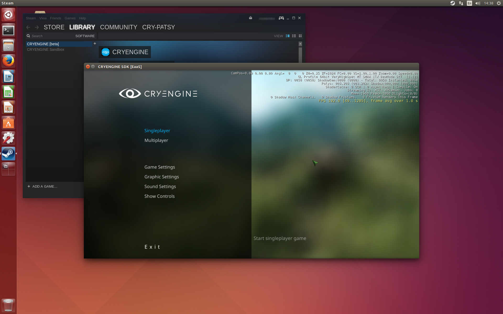 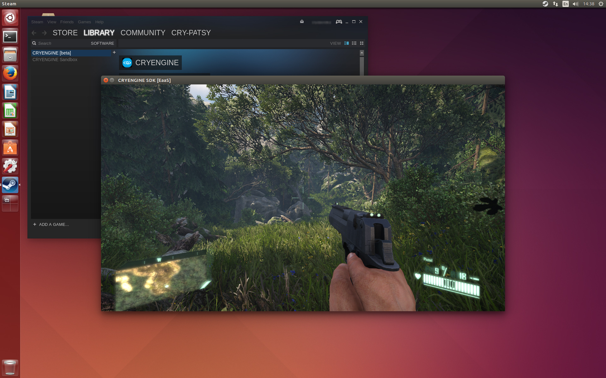
VR Поддержка
Поддержка Окулус Рифт был интегрирован, и мы быстро добавляем больше возможностей и функций, которые помогут вам максимально эффективно использовать свои виртуальные миры. Мы включили небольшой демонстрационный уровень, метко названный "VR_Demo" уровень. Здесь представлена некоторая информация о том, как вы можете подойти к настройке уровней для VR, а также о некоторых последствиях и впечатляющих преимуществах использования VR.
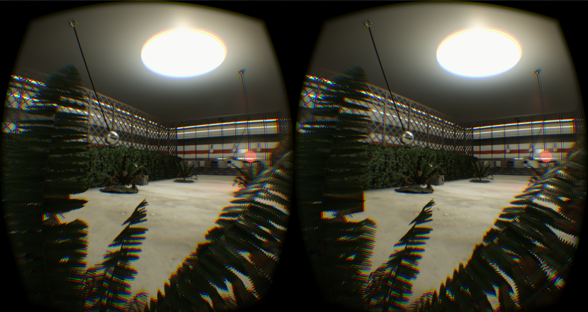
Объемный туман на основе вокселей
В CRYENGINE 3.8 мы представляем совершенно новую объемный туман на основе вокселей система. Система поддерживает освещение отложенным светом, учитывает границы громкости клипа и стабильно работает с прозрачными объектами, включая частицы. Также возможно вводить частицы непосредственно в объем тумана, чтобы имитировать некоторую турбулентность.
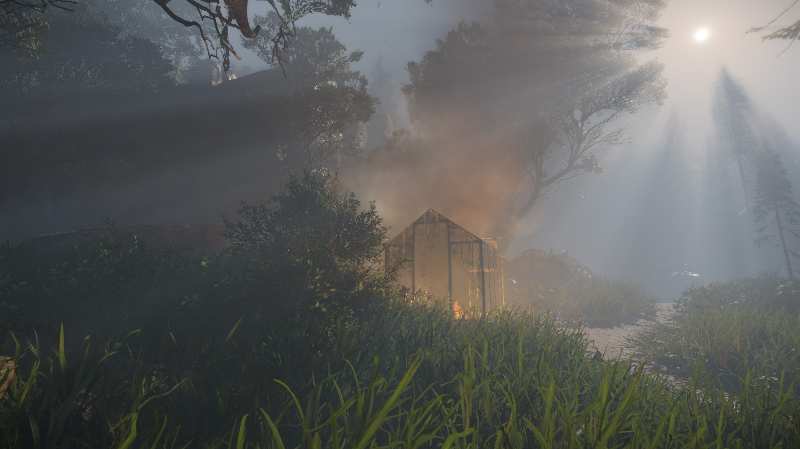
Правильный порядок/сортировка прозрачных объектов, частиц и источников света в объеме объемного тумана.
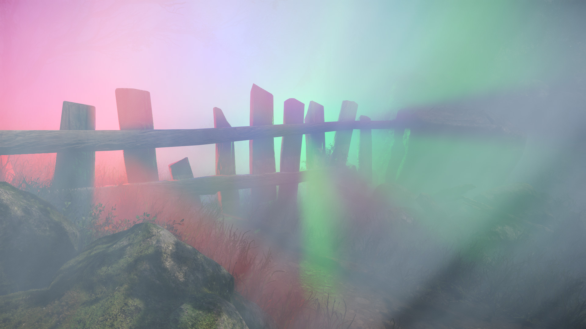
Тени, отбрасывающие свет в объемном тумане
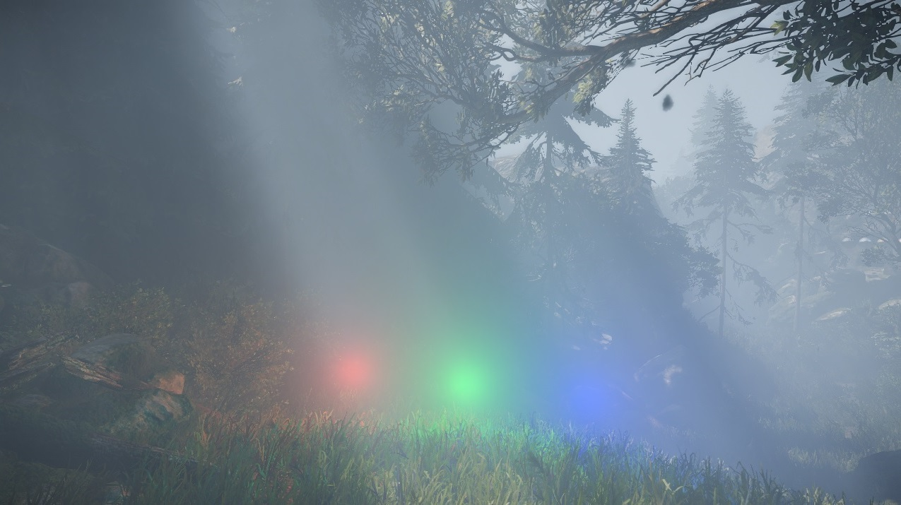 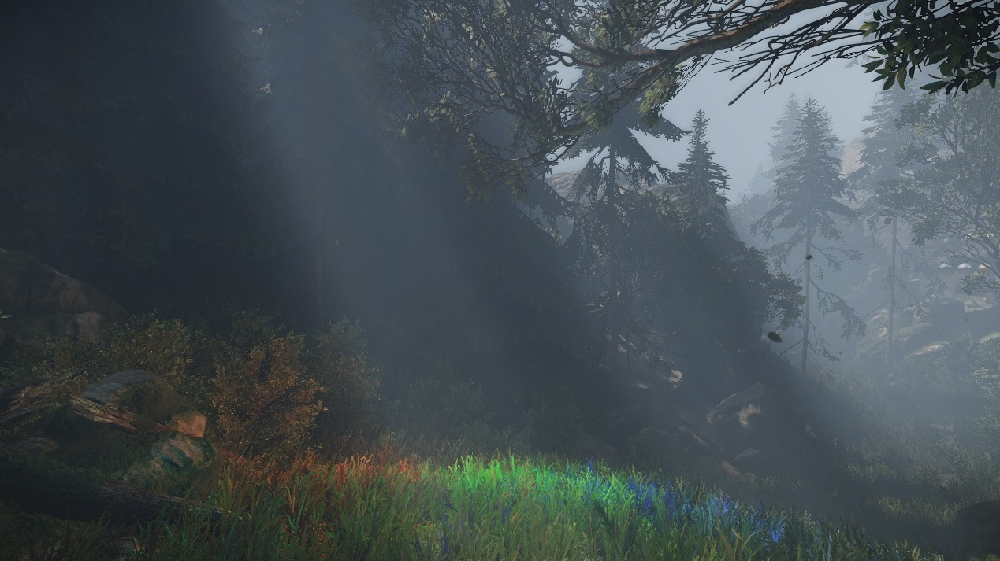
Сравнение Световых Сущностей, вносящих вклад в Объемный туман Вкл./Выкл.
Каскадный теневой кэш
Кэшированные тени (ранее: карта теней static) была расширена до нескольких каскадов, охватывающих расстояние обзора в несколько километров. Обновления кэша теперь обрабатываются «под капотом», но их по-прежнему можно настроить вручную с помощью графа потока.
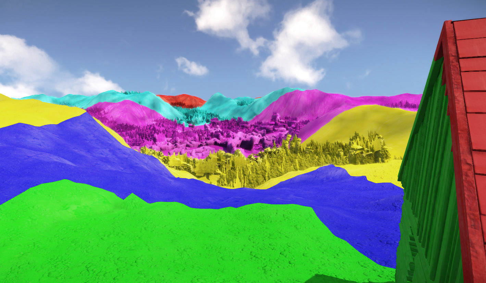
Обратная глубина для повышения точности Z-буфера
CRYENGINE теперь хранит значения глубины в обратном диапазоне. В сочетании с буфером глубины с плавающей запятой это помогает значительно повысить точность глубины и позволяет пользователям размещать ближнюю плоскость отсечения намного ближе, чем раньше, не сталкиваясь с проблемами z-борьбы.
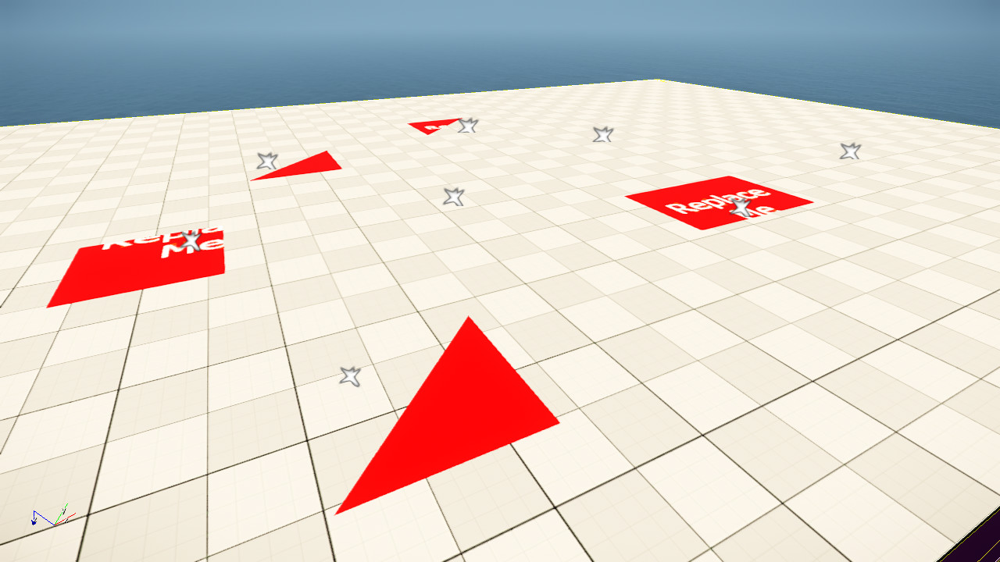 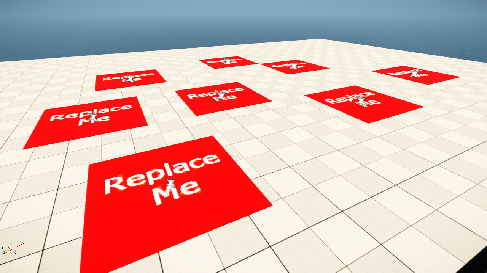
Слева показана преувеличенная установка с расстоянием вблизи плоскости, установленным на 0,1 см, чтобы продемонстрировать Z-бои. Справа — та же самая настройка с включенной обратной глубиной.
Эффективное POM самозатенение
Самозатенение POM теперь возвращается и эффективно работает с отложенным затенением, позволяя солнцу отбрасывать тени из карты высот, используемой для POM.
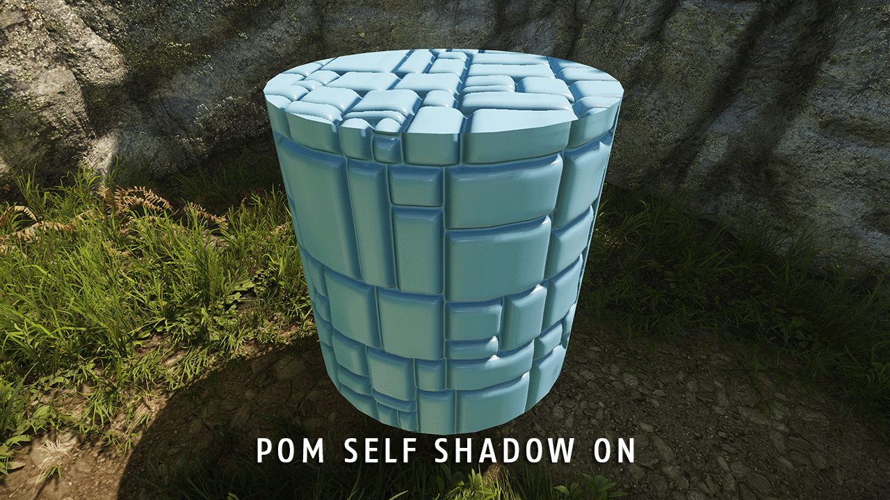 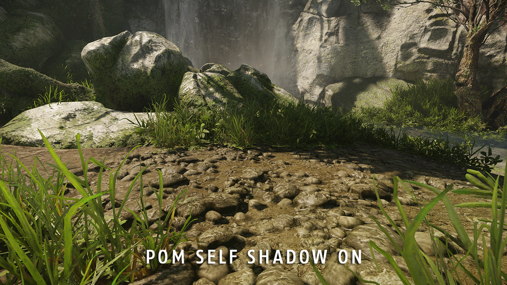
8-весовое скинирование вершин GPU
Скинирование сложных анимированных сеток, использующих более 4 весов вершин (до 8 весов), теперь можно выполнять непосредственно на GPU, что может значительно снизить нагрузку на CPU.
Глобальное освещение на основе вокселей (экспериментальное)
В последней версии добавлен прототип глобальное освещение на основе вокселей система, которую можно использовать для рендеринга крупномасштабной внешней окклюзии с дополнительным непрямым отражением света. Обратите внимание: эта функция является экспериментальной и не готова к производству, на данный момент она предоставляется только для тестирования и получения ранних отзывов.
Множество улучшений качества рендеринга
- Блум стал более стабильным и показывает меньше мерцающих светлячков.
- Повышение дискретизации частиц с половинным и четвертым разрешением дает более чистые края.
- Общее качество SSDO улучшилось, особенно качество зеркальной окклюзии.
- Отложенные декали более совместимы со стандартными декалями и больше не страдают от чрезмерного псевдонимов.
- Каустики получили некоторые качественные улучшения и теперь работают с плиточным отложенным затенением.
- Вспомогательные окна просмотра, такие как инструмент «Символ», значительно улучшили качество затенения.
- Гладкость создается с использованием более линейного распределения.
- Фильтрация нормальной дисперсии дает более чистые результаты.
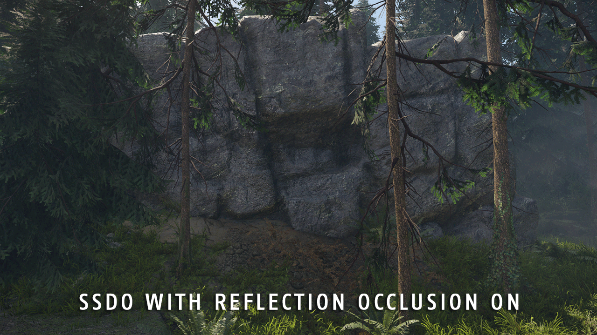 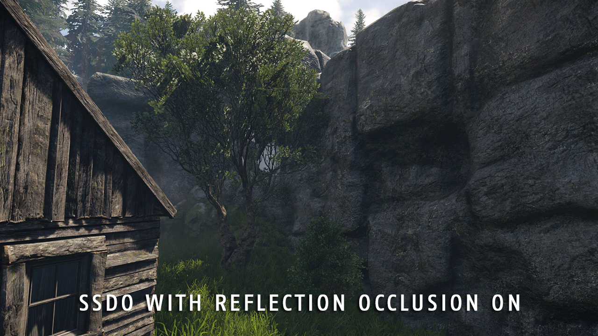
3ds Max 2016 г., Maya 2016 г., MotionBuilder 2016 г.
Добавлена поддержка 3ds Max 2016, Maya 2016, MotionBuilder 2016.
GameZero
Проект GameSDK — полноценный пример игры. Он демонстрирует, как можно использовать большинство функций CRYENGINE. Основанная на Crysis 3, ее размер и сложность могут ошеломить новичков. Кроме того, создание прототипов игр, отличных от шутеров от первого лица, может быть утомительным, поскольку сначала игровой проект придется упростить до его основных функций.
GameZero предлагает минималистский подход к CRYENGINE. Это позволяет пользователям, впервые работающим с ним, получить краткий обзор использования основных функций движка. Его можно использовать в качестве отправной точки для создания нескольких типов игр.
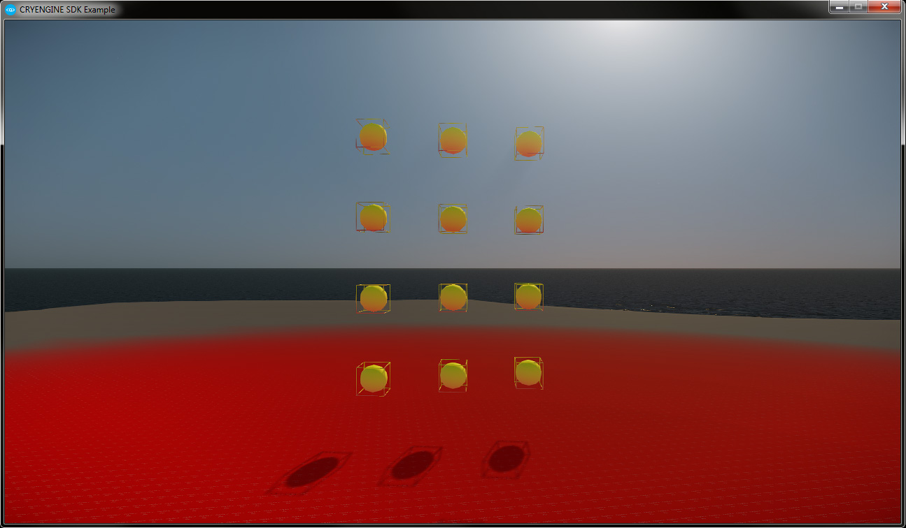
Дорожный инструмент
Инструмент «Дорога» теперь имеет возможность стирать растительность вдоль дороги, что может быстро ускорить и упростить создание уровней.
Были представлены некоторые новые параметры, такие как EraseVegWidth, который позволяет вам определить, на каком расстоянии от краев дороги срезать растительность.
Существует также EraseVegWidthVar, который дает множитель вариации для значения EraseVegWidth. Это позволяет создать более естественный вид, при этом некоторые участки будут более заросшими, чем другие.
SceneRoot в Maya
Maya скрипты для создания SceneRoot были добавлены (сценарии доступны через панель инструментов Crytek Maya). См. Создание персонажей в Maya,
«Y-up/Z-Up, узел SceneRoot, корневая кость».
Важные изменения кода и данных
См. Важные 3.8.1 EaaS Изменения кода и данных статью для получения дополнительной информации.
Редактор
Sandbox Общие сведения
- Новый: (CE-4998) Добавлен параметр панели окружения, позволяющий сместить диапазон обрезки солнечных теней в сторону дальней плоскости тени.
- Новый: (CE-2154) В раскрывающийся список стереовыхода на панели рендеринга добавлена опция «VR Headset».
- Новый: (CE-5874) В редактор префабов добавлено контекстное меню с возможностью наследовать опорную точку от объекта внутри префаба.
- Новый: (CE-5462) SelectObjectsDialog: Выбор объектов в закрытом префабе теперь выбирает фактический префаб.
- Новый: (CE-3962) Слои: добавьте комбинацию клавиш ALT + LMB, чтобы изолировать слой.
- Новый: (CE-3970) Слои: добавление изменений слоя в список отмены/повтора.
- Новый: (CE-5067) Добавлена поддержка r_Vsync в редакторе.
- Новый: (CE-6101) Включить пользовательский размер и масштабирование прозрачности сфер локатора инструмента «Линейка» в настройках редактора. В центральную точку добавлен проволочный куб для более точного измерения. Удален бесполезный текст «Маркер линейки».
- Новый: (CE-6102) Добавлено масштабирование определенного размера сфер TagPoint в настройках редактора, которое по-прежнему умножается на основе глобальной функции масштабирования «Помощники». Удалены ненужные (одноразовые) определения. Установите масштаб Tagpoint по умолчанию на 0,5 в результате удаления кода определения и очистки. Helperscale теперь также происходит от родительского элемента EntityObject. Удалена неиспользуемая функция SetHelperScale. Исправлены некоторые опечатки.
- Новый: (CE-6231) Запишите в консоль имя + значение CVar при запуске скриптом Python.
- Новый: (CE-5458) Теперь можно искать имена субматериалов в Material Editor.
- Новый: (CE-6227) В скрипты Python редактора добавлены элементы управления скрытой маской.
- Новый: (CE-5531) В раскрывающемся списке DBview содержится только 30 объектов, добавлена полоса прокрутки.
- Новый: (CE-6106) HardwareMouseEvent теперь поддерживает ввод правой и средней кнопкой мыши в режиме игры «Редактор».
- Новый: (Материал) В диалоговое окно файла текстуры добавлен ярлык папки «Объекты».
- Новый: в QViewport добавлены ограничения камеры, такие как перемещение, вращение и панорамирование.
- Новый: В редактор добавлены новые панели быстрого доступа.
- Новый: добавлены новые файлы значков для панелей инструментов редактора. Добавлены значки на панель инструментов.
- Новый: добавлено отображение смещения для TerrainMoveToolPanel.
- Исправлено: (CE-5891) CBaseObject теперь уведомляет затронутую область еще до ее трансформации.
- Исправлено: (CE-5653) Редактор транспортных средств не сохраняет изменения.
- Исправлено: (CE-5696) Генерация местности: исправлены ошибки с различными значениями генерации.
- Исправлено: (CE-5211) Включение отладки прокси в игровом режиме приводит к тому, что строка меню становится активной во время игры.
- Исправлено: (CE-4943) Диалоговое окно DataBase: не создавать библиотеку, если существует другая библиотека с таким же именем.
- Исправлено: (CE-4872) Дороги исчезают, если установить слишком широкую ширину (NB: ограничение все еще существует, но может увеличить ширину примерно в 5 раз по сравнению с предыдущим).
- Исправлено: (CE-5453) Правильный выбор масштаба из InfoBar при одновременном масштабировании нескольких кистей.
- Исправлено: (CE-5700) Слои объектов: сохраняйте объекты внутреннего слоя, если у него есть внешний родительский слой.
- Исправлено: (CE-5009) Не замораживайте область просмотра после нажатия кнопки отмены в окне предупреждения о том, что уровень доступен только для чтения.
- Исправлено: (CE-3072) Окно слоя текстуры ландшафта: ESC для выбора текстуры слоя.
- Исправлено: (CE-5941) Сценарии перезагрузки не перезагружают файлы BodyDamage.
- Исправлено: (CE-4944) Вернуть гизмо перемещения после редактирования формы.
- Исправлено: (CE-5822) Сбой, когда Sandbox закрывается и имеется модальное диалоговое окно Qt для панели просмотра.
- Исправлено: (CE-3666) При увеличении размера ландшафта создается новый ландшафт с высотой 0.
- Исправлено: (CE-5655) Исправлено форматирование (строчные буквы + пробелы) в параметрах/кварах и т. д.
- Исправлено: (CE-5006) (Дорога/Река) Точки не обязательно выбирать double в режиме редактирования, прежде чем их можно будет переместить.
- Исправлено: (CE-5461) Добавлена возможность открытия нескольких библиотек одновременно.
- Исправлено: (CE-5276) Удалить запрос на экспорт в Engine. (CE-5841) Сообщение об успешном выполнении записывается на консоль.
- Исправлено: (CE-5897) Сообщение об успешно сохраненном уровне теперь выделено зеленым цветом / сообщение об ошибке красным.
- Исправлено: (CE-5666) Избегайте сохранения материалов во время загрузки другого уровня.
- Исправлено: (CE-6104) Клонирование архетипа в библиотеке сущностей редактора оставляет библиотеку в недопустимом состоянии.
- Исправлено: (CE-6265) Перебирает все режимы отображения информации, добавляет к циклу r_DisplayInfo=3.
- Исправлено: (CE-6021) Диалоговое окно «Перейти к позиции» не закрывается с помощью Escape.
- Исправлено: (CE-5704) При выборе нескольких фигур MNM удалены основные функции сворачивающейся панели.
- Исправлено: (CE-6032) Отмена не имеет эффекта после изменения местоположения объекта с помощью дескриптора в нижней части окна просмотра.
- Исправлено: (CE-5896) Добавлена условная компиляция для упрощения AITerritoryShapes до одной точки (USE_SIMPLIFIED_AI_TERRITORY_SHAPE).
- Исправлено: создать элемент управления быстрым доступом до того, как основное окно получит фокус, чтобы сохранить правильный фокус.
- Исправлено: Исправлены ложные вызовы IRenderer::ChangeViewport в каждом кадре (препятствовало правильной работе горячих клавиш RenderDoc).
- Исправлено: Редактор транспортных средств не сохраняет добавленные/удаленные детали.
- Исправлено: возможен сбой в редакторе транспортных средств при попытке повторно открыть уже загруженный автомобиль.
- Исправлено: Сбой при нажатии «Выровнять по карте высот» на еще пустой дороге.
- Исправлено: Исправлены проблемы со скрытием объекта, связанного с ним.
- Исправлено: Не отправлять событие ENTITY_EVENT_EDITOR_PROPERTY_CHANGED несколько раз / некоторые объекты не загружаются.
- Исправлено: Элемент управления свойствами в старом стиле: можно было переключать логические значения с помощью пробела, даже если элемент управления свойством был доступен только для чтения.
- Исправлено: скрыть кнопку закрытия из закрепляемых окон с отключенным закрытием.
- Исправлено: Предупреждения для редактора транспортных средств.
- Исправлено: Вкладка «Структура редактора транспортных средств» не распознает родительские детали, вновь созданные с помощью редактора.
- Исправлено: Отображение дополнительной информации о фоновых задачах во всплывающей подсказке RC (отдельные счетчики для компиляции текстур и других задач, добавлены последние задачи).
- Исправлено: Сделаны членами данных CBackgroundTasksListener private.
- Исправлено: отменить проблему приостановки.
- Исправлено: HandleAttachmentChange должен игнорировать отсоединение/присоединение, которое не хочет сохранять мировое положение.
- Исправлено: сериализуется неправильная позиция.
- Исправлено: ai_MNMDebugAccessibility неправильно устанавливается при запуске редактора.
- Исправлено: ошибка, из-за которой объект формы принудительно сбрасывался до «закрытой» формы при перезагрузке уровня/перезагрузке скриптов.
- Исправлено: поиск названий текстур в Material Editor.
- Исправлено: Сделано AreaBoxes не масштабируемым с помощью инструментов масштабирования Sandbox UI (может привести к нарушению функциональности), вместо этого используйте параметры Entity. Параметр «Заполненный» переименован в «DisplayFilled» для обеспечения единообразия с другими объектами.
- Исправлено: изменено поведение PanelDisplayHide для более последовательной и лучшей работы с сигналами Lua.
- Оптимизированный: (CE-6112) Увеличена непрозрачность цвета заливки ProximityTrigger, так как в некоторых ситуациях его было трудно увидеть.
- Оптимизированный: (CE-5652) В диалоговом окне «Пакет снаряжения» при открытии по умолчанию выбирается пакет снаряжения «Player_Default».
- Оптимизированный: (CE-1167) Удаление неиспользуемого диспетчера PAK из Sandbox.
- Оптимизированный: название «глянцевость» изменено на «гладкость» в Material Editor UI.
- Оптимизированный: обновлены панели инструментов редактора environmentModes и viewModes.
- Оптимизированный: установите диалоговое окно «Новый уровень» на использование единиц измерения 1 метр вместо 2 метров по умолчанию.
- Оптимизированный: Удалить неиспользуемые конфиги/скрипты из папки редактора.
- Оптимизированный: Удаление кода Qt4 из QtIntegration.cpp.
- Оптимизированный: Удалены ограничения на ввод XYZ из TerrainMoveToolPanel.
Flowgraph
- Новый: (CE-4312) Реализован новый узел Weapon:Ammo FG для объединения функций и очистки узлов оружия и инвентаря.
- Новый: (CE-5322) Новые узлы FlowGraph для указания фракции всех ИИ в AIWave.
- Новый: (CE-4250) Добавлен новый узел FlowGraph, позволяющий ИИ вращать башни танков.
- Новый: (CE-2722) Добавлен ввод уничтожения в узле сценария транспортного средства FG.
- Новый: (CE-3413) В контекстное меню FG добавлена логика:Любая.
- Новый: добавлен узел FindEntityByName FG.
- Новый: Добавлены узлы FG для добавления ограничений + оценки скорости вращения игрока (для ограничений). Физика:Ограничение и Физика:CameraProxy.
- Новый: добавьте входные данные, чтобы дизайнер мог выбрать, какая ось объекта должна указывать на цель при использовании узла потокового графа EntityFaceAt.
- Новый: добавлен физический идентификатор в узел камеры raycast.
- Новый: добавлен потоковый узел ActionMapManager для включения/отключения определенных карт действий.
- Исправлено: (CE-6368) (Trackview) Состояние воспроизведения анимации: узел PlaySequence теперь обновляется, когда последовательность остановлена.
- Исправлено: (CE-1130) Удалены дублированные и устаревшие узлы боеприпасов FG.
- Исправлено: (CE-6287) Разрешить несколько соединений на каждом выходе узла RandomTrigger во избежание сбоя.
- Исправлено: (CE-4976) Узел WeaponSensor, выводящий имя режима огня в вывод AmmoName. Переупорядочил выходные данные для соответствия. Удален неиспользуемый/неработающий вывод «Тип боеприпасов». Обновлен текст описания для некоторых выходов. «Патроны» переименованы в «AmmoCount» и переименованы в «MaxAmmo» в «ClipSize» для лучшей читаемости и соответствия параметров скриптов оружия.
- Исправлено: (CE-6288) Удаление узла из узла RandomTrigger больше не нарушает функциональность узла Randomtrigger.
- Исправлено: (CE-5142) Переработаны узлы итератора объекта Flowgraph.
- Исправлено: Во избежание путаницы функции ToString(SFlowSystemVoid&) и ToString(TFlowInputData&) были изменены, и теперь они возвращают "неизвестно", как это было раньше, вместо возврата "SFlowSystemVoid" и "TFlowInputData".
- Исправлено: исправлена утечка памяти, связанная с невозможностью освобождения перечислителя FlowNodes.
- Исправлено: Узел EntityFaceAt: исправлен нежелательный ролл, добавленный к трансформации, и плохое начальное состояние, требующее от дизайнеров активировать все входные данные вручную. Примечание. Вход был переименован в узле потокового графа EntityFaceAt.
- Исправлено: Возможен сбой в процедуре потока GetInputActor.
- Исправлено: Исправлен узел MoveEntityTo (нарушалась обработка различных систем координат).
- Исправлено: ошибка, из-за которой объект нельзя было переместить с помощью Flownode «MoveEntityTo», если у объекта нет прокси.
- Исправлено: Ошибка в узле потока "MoveEntityTo", из-за которой физический объект не останавливается при нажатии кнопки "Стоп".
- Исправлено: Сбой в CFlowNode_AILookAt::OnUpdate при выгрузке уровня.
- Исправлено: Проблема с привязанными к миру узлами ограничений Flowgraph.
- Зафиксированный: Автомобиль "Enter" FlowNode аварийно завершает работу при использовании недействительного сиденья ID.
- Оптимизированный: (CE-2341) Удален дублированный потоковый узел SimulatePlayerInput.
- Оптимизированный: Узел потока ввода:Action переименован в Input:ActionListener для лучшего понимания его использования.
Префабы
- Новый: (CE-5501) Добавить информацию о количестве экземпляров уровня в выбранную сводную панель Prefab и представление базы данных.
- Новый: Добавлены пользовательские точки поворота для префабов. Можно перемещать вручную с помощью мыши или выравнивать по сборным объектам.
- Исправлено: Удаление панелей не работало должным образом при множественном выборе.
- Исправлено: Оптимизация способа обновления свойств объектов внутри префабов. Теперь отражаются только изменения, что значительно ускоряет работу с префабами.
- Исправлено: копирование/удаление/перемещение более 10 узлов потокового графа внутри префаба приводит к его зависанию.
- Исправлено: Редактирование большого количества объектов внутри префаба приводит к его блокировке.
- Исправлено: Когда пользователь изменяет объект, который является частью префаба, только сам объект и его изменения распространяются на все остальные префабы того же типа (ранее все префабы этого типа уничтожались и воссоздавались с нуля).
- Исправлено: Сбой при работе с динамическими префабами.
- Исправлено: установка пользовательских точек поворота в некоторых случаях работала некорректно.
- Исправлено: Извлечение префаба приведет к удалению всех префабов этого типа с уровня.
- Исправлено: Префабы, помещенные в уровень, всегда будут вызывать диалоговое окно обработчика Perforce.
- Исправлено: Объекты, назначенные узлам FG, станут неназначенными при копировании и вставке узлов.
- Исправлено: Библиотека префаба модифицируется, когда пользователь удаляет внешний слой. Удаление слоев на уровне не должно изменять библиотеку префаба.
- Исправлено: Функция сценариев ReloadAll не работала оптимально с префабами. Это запускало ненужные операции изменения в сборных библиотеках, хотя все, что нам нужно, — это перезагрузить объекты.
- Исправлено: объекты в префабах по-прежнему доступны для выбора, когда они скрыты или заморожены.
- Исправлено: узлы Flowgraph внутри префабов работали в редакторе, но не в игре. Это экспортирует правильные направляющие сущностей при расширении префабов.
Растительность
- Новый: кнопка «Стереть растительность» для редакторского инструмента «Дорога».
- Новый: перенос высоты и уклона со слоя местности в группу растительности одним нажатием кнопки.
- Новый: Поворот объектов растительности по оси Z в сторону склона местности: функция добавляет новое свойство на панель растительности: «RotationAngleToTerrainNormal».
- Новый: Значение AlignToTerrain растительности изменено с флажка на значение. Изменяется bAlignToTerrain (bool) на fAlignToTerrain (float) на панели растительности.
Trackview
- Новый: Пробел теперь запускает воспроизведение, когда редактор кривых находится в фокусе.
- Исправлено: (CE-4106) Формат файла больше не сбрасывается при выборе различных элементов рендеринга в диалоговом окне пакетной рендеринга.
- Исправлено: (CE-6082) Бесконечная рекурсия, когда перекрывающиеся подпоследовательности управляют одной и той же камерой.
- Исправлено: (CE-6082) Бесконечная рекурсия, когда перекрывающиеся подпоследовательности управляют одной и той же камерой. Исправлена неинициализированная переменная.
- Исправлено: Медленная очистка при использовании нескольких подпоследовательностей, управляющих одним и тем же объектом.
- Исправлено: Неинициализированная переменная.
- Исправлено: Последовательные треки по умолчанию для узла сущности.
- Исправлено: исправить порядок узлов TrackView.
CryDesigner
- Новый: добавлен инструмент «Ярлык» в группу «Разное».
- Новый: Добавлен новый элемент в настройку DC: «ESC мгновенно переходит в объектный режим».
- Новый: добавлено стирание выделения путем перетаскивания мыши, удерживая ALT.
- Новый: Добавлена поддержка непланарного квадрокоптера.
- Новый: реализован выбор контурной грани.
- Новый: реализован выбор грани кольца.
- Новый: Реализован инструмент LoopCut.
- Новый: реализован инструмент свертывания.
- Новый: В инструмент «Удалить» добавлена функция стирания «Вершин» и «Ребра», общих для нескольких полигонов.
- Новый: заменены существующие интерфейсы MFC на интерфейсы Qt.
- Новый: Снова добавлен путь к Python в wscript.
- Новый: добавлена сглаживающая поверхность в разделенной сетке.
- Новый: добавлена кнопка «Применить» на панелях инструментов RemoveDoubles и «Скрыть», чтобы вы могли использовать в них функциональность инструмента.
- Новый: добавлено поле UV к вершине в Polygon. Введен параметр UV для каждой вершины в классе Polygon.
- Новый: Улучшен способ задания смещения в инструменте «Смещение».
- Исправлено: (CE-5788) Решены проблемы с неправильными данными кэша, возникающие после перемещения вершин или ребер с включенной функцией «Сохранять центр поворота».
- Исправлено: (CE-6038) Исправлена ошибка, из-за которой пустой объект дизайнера не удалялся. Также была добавлена процедура удаления всех пустых объектов дизайнера непосредственно перед сохранением и экспортом уровня.
- Исправлено: (CE-6013) В инструменте TextureMapping исправлена ошибка, связанная с обратной привязкой плитки.
- Исправлено: (CE-6042) Исправлен случайный сбой в инструменте TextureMapping.
- Исправлено: (CE-6041) Комбинация дополнительного мата ID постоянно обновляется.
- Исправлено: (CE-6014) Исправлена опечатка инструмента «Скрыть лицо».
- Исправлено: (CE-6007) Сломанные текстуры на дизайнерском объекте.
- Исправлено: (CE-6023) Включено рисование профиля лестницы на земле.
- Исправлено: (CE-5217) (CE-6017) Улучшен инструмент клонирования/массива, теперь он работает хорошо и не вызывает сбоев.
- Исправлено: (CE-6018) Добавлена возможность отмены настройки уровня подразделения.
- Исправлено: (CE-6015) Исправлена ошибка, приводившая к сбою в работе инструмента «Скос».
- Исправлено: (CE-6153) Исправлена ошибка, приводившая к сбою после логической операции.
- Исправлено: (CE-3674) Восстановлено отображение количества выделенных объектов в дизайнере.
- Исправлено: (CE-6038) Ошибка, связанная с экспортом неполных объектов дизайнера.
- Исправлено: Ошибка, связанная с невозможностью загрузки объекта дизайнера с тегом «Регион» в xml.
- Исправлено: ошибка, связанная с переходом в недопустимый режим дизайнера и зависанием в режиме дизайнера после отмены.
- Исправлено: включено отображение скрытых кубов для вершин, ребер и граней при удержании клавиши пробела.
- Исправлено: обработаны неплоские грани в инструментах «Сварка», «Инструмент исключения» и т. д.
- Исправлено: разрешено выбирать замороженные объекты в Designer Tool.
- Исправлено: ошибка, связанная с невозможностью загрузки списка ярлыков при создании объекта CShortcutManager.
- Исправлено: Исправлен сбой, возникавший при отмене.
- Исправлено: Расширена область «Настройки», чтобы все элементы можно было отображать без прокрутки.
- Исправлено: Ошибка, связанная с тем, что UI из CryDesigner не исчезает при переключении на объект.
- Исправлено: Неправильный выбор края контура.
- Исправлено: Неправильный выбор края кольца.
- Исправлено: Ошибки рисования линий в нескольких регионах.
- Исправлено: Ошибка регулировки высоты лестницы в Stair Tool.
- Исправлено: Areasoild снова доступен.
- Исправлено: Сбой при выходе из инструмента дизайнера, когда модель пуста.
- Исправлено: Редкий сбой во время загрузки уровня.
- Исправлено: Ошибка, связанная с BackFaceFlag модели.
- Исправлено: включено для выравнивания высоты в инструменте «Выдавливание» без нажатия клавиши Shift.
- Зафиксированный: Ошибка при рисовании линии на пустом объекте на земле.
- Исправлено: улучшен способ задания смещения многоугольника с учетом отверстий.
- Исправлено: UV-объекты объекта кисти сохраняются после преобразования в объект дизайнера.
- Оптимизированный: три элемента в настройках (с ESC в режим объекта, «Включить плавное редактирование» и «Неплоский четырехугольник») были удалены.
- Оптимизированный: Имена инструментов, сохраненные в JSON, были изменены с имени класса инструмента на имя инструмента.
- Оптимизированный: изменены внешние настройки эксклюзивного режима.
- Оптимизированный: названия групп переименованы в первую букву, чтобы вкладки выглядели лучше.
- Оптимизированный: очищены коды, связанные с обновлением всех состояний CryDesigner.
- Оптимизированный: namespace BUtil:: переименован в CD::
- Оптимизированный: Весь проект был реорганизован таким образом, чтобы дублированных кодов было меньше, а имена файлов и классов long были сокращены и т. д.
- Оптимизированный: панели QT объединены с использованием QPropertyTree в один репрезентативный класс панелей template.
- Оптимизированный: Удалены дублирующиеся коды при создании панели каждого инструмента путем помещения их в абстрактный класс инструментов.
- Оптимизированный: Коды класса DesignerTool были реорганизованы, чтобы исключить возможность запуска дублированных кодов, и были удалены ненужные части.
- Оптимизированный: Коды инструмента наложения текстур были переработаны.
- Оптимизированный: ElementManager::GetSize() переименован в ElementManager::GetCount()
- Оптимизированный: «Регион» переименован в «Многоугольник».
- Оптимизированный: 'CBrushRegion::RegionPtr' заменено на 'CD::PolygonPtr'
- Оптимизированный: 'GetRegionSize()' переименован в 'GetPolygonCount()'
- Оптимизированный: Уменьшено максимально возможное количество использования kDesignerEpsilon.
- Оптимизированный: перечисления из CBrushPolygon и CBrushDesigner перенесены в CD:: namespace.
- Оптимизированный: Удален класс CBrushArgumentEx и его методы, попавшие в CBrushArgument.
- Оптимизированный: Очищены коды данных кэша в классе CBrushDesigner.
- Оптимизированный: CBrushRegion::GetVertexListSize() переименован в CBrushRegion::GetVertexCount().
- Оптимизированный: CBrushRegion::GetEdgeSize() переименован в CBrushRegion::GetEdgeCount().
- Оптимизированный: Коды регистрации инструментов/UI были переработаны путем объединения этих кодов в ToolRegister.h/cpp.
- Оптимизированный: Переработаны коды, связанные с созданием главной панели.
- Оптимизированный: Рефакторинг кодов UI.
- Оптимизированный: Удалены специальные коды Qt UI из UIFactory.h.
- Оптимизированный: изменено положение камеры для эксклюзивного режима, чтобы целевой объект можно было лучше рассмотреть.
- Оптимизированный: параметр объекта ExcludeMaterialPicking был удален, поскольку он вообще не использовался.
- Оптимизированный: Диалоговое окно файла MFC, используемое для экспорта как группы, заменено диалоговым окном файла Qt.
- Оптимизированный: SMeshInfo и треугольники заменены на FlexibleMesh.
- Оптимизированный: Кисть переименована в ModelCompiler.
- Оптимизированный: Коды, связанные с сеткой выбора, были переработаны.
- Оптимизированный: Удалены все коды отладки полигонов.
- Оптимизированный: «Режим» и «Инструмент» переименованы в «Инструмент» и «Инструмент».
- Оптимизированный: Некоторые функции из BaseTool были перенесены в DrawTool/DesignerTool и т. д., чтобы сделать BaseTool легче.
- Оптимизированный: Brush::DeleteRenderAllNodes() переименован в Brush::DeleteAllRenderNodes().
- Оптимизированный: DesignerBaseObject<T>::GetDesigner() переименован в DesignerBaseObject<T>::GetModel().
- Оптимизированный: Распределяет файлы инструментов по нескольким подпапкам.
- Оптимизированный: Некоторые исходные файлы в Core были перемещены в папку «Util».
- Оптимизированный: «Создать» переименован в «Форма».
- Оптимизированный: имя каждого инструмента в группе «Создать» было сокращено.
- Оптимизированный: SOutputParameterForStairCreation переименован в SOutputParameterForStair.
- Оптимизированный: Коды, касающиеся инструмента и UI, были переработаны таким образом, что коды для регистрации инструмента и UI разбросаны по кодам инструментов.
- Оптимизированный: удален лишний метод триангуляции.
- Оптимизированный: Удалены дублирующиеся коды инициализации переменных в конструкторах Polygon.
- Оптимизированный: CD:: максимально удален из класса Polygon.
- Оптимизированный: Рефакторинг кодов ресурсов MFC путем удаления неиспользуемых.
QT Система
- Новый: (CE-5691) (QPropertyTree) Межdll-регистрация PropertyRow-s.
- Новый: (QPropertyTree) Флажки по умолчанию упакованы в два столбца (можно отключить для каждого дерева свойств).
- Новый: (QPropertyTree) Добавлен выбор смены.
- Исправлено: (QPropertyTree) Исправлена ошибка, из-за которой свойства управляющего символа «+» расширялись после каждого изменения.
- Исправлено: (QPropertyTree) Исправлены всплывающие подсказки для ранжированных значений и векторов (и других встроенных свойств).
- Исправлено: (QPropertyTree) Правильная обработка управляющего символа '!', доступного только для чтения. в кнопках снимите флажок только для чтения.
Рендерер
- Новый: восстановлено самозатенение POM.
- Новый: добавлена функция объемного тумана на основе вокселей. Можно включить с помощью e_VolumetricFog=1. См. Объемный объем на основе вокселей Fog_old для получения дополнительной информации.
- Новый: улучшена точность глубины для рендеринга сцены с обратным диапазоном глубины пространства клипа (на данный момент ограниченная поддержка OpenGL).
- Новый: уменьшено мерцание изображения за счет более качественной понижающей дискретизации.
- Новый: (CE-2187) Добавлена переменная r_statsMinDrawcalls для установки минимального значения, отображаемого для использования с r_stats 6.
- Новый: (CE-6149) Сделайте максимальное количество источников света, отбрасывающих тени, настраиваемым через CVar: r_ShadowCastingLightsMaxCount. Каждые 4 источника света потребляют дополнительно 8 МБ памяти при разрешении 1080p, поэтому увеличивайте объем только по мере необходимости.
- Новый: Добавляет функциональность IRenderAuxGeom::Draw2dlabel().
- Новый: Изменен шейдер воды, учитывающий цвет Sun Specular Color, что может быть полезно в условиях слабого освещения (в ночное время) для усиления зеркальных отражений.
- Новый: переключено на воспринимаемое более линейное распределение шероховатости (существующие карты глянца преобразуются в новое распределение с помощью RC).
- Новый: Потоковый буфер теперь совместим с вычислениями.
- Новый: поддержка семантики SamplerState и текстур в коде и шейдерах.
- Новый: Включена анизотропная фильтрация для диффузного и нормального слоя наложения.
- Новый: Добавлена поддержка изменения масштаба базового диапазона для телевизоров (применяется после PostAA, сейчас не влияет на другие пост-эффекты или UI).
- Новый: Введена CVar качества цветения и снижено качество в mobile.cfg.
- Новый: (OpenGL) Добавьте тип рендеринга OpenGL и отобразите «GL» в displayinfo.
- Новый: добавлена функция шума плотности тумана для FogVolume.
- Новый: Улучшена зеркальная окклюзия и добавление SSDO в затенение.
- Новый: теперь можно динамически устанавливать значок для отображения в окне и на панели задач из текстуры DDS.
- Новый: добавлено цветовое пространство IRB для кодирования отражения. Добавлены все цветовые пространства для вывода.
- Новый: включена генерация MIP-карт для динамических флэш-текстур, используемых в слотах материалов.
- Новый: вычислить уровень MIP для отложенных декалей, чтобы уменьшить наложение псевдонимов.
- Новый: Разрешить переключение на уровень анизотропии 1.
- Новый: применить параметры материала декали (альфа-множитель, спад, диффузная непрозрачность) для отложенных декалей (большая согласованность с прямыми декалями).
- Зафиксированный: (CE-5767) Расширить флаги минимальной спецификации отбрасывания теней в данных ландшафта для поддержки всех спецификаций.
- Исправлено: (CE-5401) Ошибка компиляции в шейдере объёма воды.
- Исправлено: (CE-4458) Проблема с картой теней местности. e_GsmCastFromTerrain=1 теперь должен давать лучшие результаты.
- Исправлено: (CE-6194) Сбой при отладке отрисовки нормалей и касательных, когда количество вершин велико.
- Исправлено: (CE-5402) Каустика воды, когда включена отложенная заливка плиткой. Улучшено смешивание каустиков.
- Исправлено: (CE-4458) Проблема с теневой картой местности. Это должно исправить большинство проблем с тенями при использовании e_gsmCastFromTerrain=1.
- Исправлено: (CE-5402) Исправлена каустика воды, когда включена отложенная заливка плиткой. Улучшено смешивание каустиков.
- Исправлено: (CE-6194) Сбой при отладке отрисовки нормалей и касательных, когда количество вершин велико.
- Исправлено: (CE-2948) (CE-2978) Вывод консервативной глубины при использовании SilPOM.
- Исправлено: (CE-1263) Изменено смешивание параметров постобработки, чтобы оно больше не усреднялось со значением параметра по умолчанию, что вызывало проблемы с параметром насыщенности; для отладки r_PostProcessParamsBlending 2 можно использовать для восстановления предыдущего поведения.
- Исправлено: (CE-6058) Улучшен рендеринг vfx в окне просмотра Mannequin — использование кубической карты среды по умолчанию и очистка auxgeom после принудительного рендеринга сетки до непрозрачности вместо прозрачности.
- Исправлено: (CE-6085) Вызовите SetStopped при выполнении задания вычисления вершин в CRenderer::PrepareParticleRenderObjects, а не после последнего задания. Предыдущая реализация может привести к бесконечному ожиданию основного потока, если в CRenderer::PrepareParticleRenderObjects не запускается задание, но m_ComputeVerticesJobState[threadList] установлено как выполняющееся. SetStarted и SetStopped уже используют счетчик, а AddJob увеличивает этот счетчик, поэтому предыдущий код отслеживания заданий не требуется.
- Исправлено: (CE-6157) DeferredRain: surface_flow.tif переименован в surface_flow_ddn.tif, чтобы предотвратить появление обычного предупреждающего сообщения.
- Исправлено: (CE-5492) Исправлена задержка и неработающий HDR/Bloom после изменения e_sketch_mode на 0.
- Исправлено: (CE-6410) Использовать фактический текущий размер области просмотра при масштабировании 2D-геометрии.
- Исправлено: (CE-6429) Исправлен сбой в FX_DrawTangents().
- Исправлено: (CE-6427) Исправлен сбой мозаичного затенения при указании недопустимой текстуры и добавлено предупреждение в разделе displayinfo.
- Исправлено: (CE-6226) Неработающий r_UseAlphaBlend заменен на r_TransparentPasses, чтобы пропустить рендеринг прозрачных объектов.
- Исправлено: Прямоугольные светильники с плиточным затенением и фиксированной интенсивностью на очень гладких материалах.
- Исправлено: Для создания представления ресурсов в CTexture::GetSurface для 3D-текстур и кубических карт.
- Зафиксированный: Объемная туманная тень.
- Исправлено: Затенение во вторичных окнах просмотра, таких как инструмент «Символ» и редактор материалов (применить выходную гамма-коррекцию, применить датчик по умолчанию, более последовательное затенение кожи).
- Исправлено: Обычные вычисления в шейдере стекла.
- Исправлено: использование диффузных и зеркальных цветов материала в шейдере стекла стало более согласованным с другими шейдерами.
- Исправлено: добавьте override для принудительной фильтрации теней вперед одним касанием. Исправляет использование вычислений и vs/ds.
- Исправлено: отключена анизотропная фильтрация для карт плавности, чтобы сделать MIP-переходы предварительно отфильтрованных карт менее заметными.
- Исправлено: используйте параметры формы вместо AttenuationBulbSize для сферических источников света (r_DeferredShadingAreaLights без включенного параметра "PlanarLight").
- Исправлено: добавлен запрос на переключение тесселяции сетки.
- Исправлено: Изменение разрешения растеризации на то, что использовалось на консолях в формате 720p.
- Исправлено: TextureFlushFix для сглаживания и теней.
- Исправлено: Сбой в CImageDDSFile::AdjustFirstFileName, когда текстура не существует.
- Исправлено: Многопоточное сжатие/распаковка.
- Исправлено: создание UAV в случае с текстурой3d.
- Исправлено: Сбой в профилировщике конвейера из-за выхода за пределы доступа к массиву списков имен static.
- Исправлено: Сбой в CImageDDSFile::AdjustFirstFileName, когда текстура не существует.
- Исправлено: Неработающая перезагрузка прикрепленной альфы с разделенными текстурами.
- Исправлено: Обновлен список буферов для r_debugGBuffer.
- Исправлено: не используйте среду выполнения Concurrency для сжатия/распаковки DXT.
- Исправлено: сбой MSAA и ошибки компиляции шейдера.
- Исправлено: Отсутствуют тени на обратной стороне растительности. Удалить режим отсечения override для генерации теней от солнца: режим отсечения настраивается в шейдере и применяется во время FX_DrawBatch*
- Исправлено: r_ShaderCompilerFolder заменен суффиксом, который добавляется к sys_game_folder для уменьшения дублирования.
- Исправлено: WaterVolume Шейдер: установите минимальные значения 0,01 для мозаики, детальной мозаики и мозаики дождевой ряби, чтобы предотвратить визуальные артефакты, если установлено значение 0.
- Исправлено: повышена резкость изображения при включенном дрожании TAA.
- Исправлено: Правильно обращайтесь с приемниками дождя под ограничительной рамкой окклюдера дождя.
- Исправлено: Загрузка текстур BGRA8 из файла: опечатка в инициализации PixFormat.
- Исправлено: исправлены MSAA и ошибки компиляции шейдеров.
- Исправлено: Утвердить в VolumeLighting.cfi: добавить float3 в список поддерживаемых токенов для объявлений текстур.
- Исправлено: использовать только минимальное смешивание альфа-канала в прямом прозрачном проходе.
- Исправлено: всегда используйте минимальное смешивание для альфа-канала объектов прямой визуализации, чтобы убедиться, что значения фиксации глубины не затронуты.
- Исправлено: очищать поверхности временной глубины при создании, чтобы избежать ошибок рендеринга из-за неинициализированного содержимого.
- Исправлено: флаг выполнения мозаичного затенения включается только тогда, когда установлен CVar.
- Исправлено: Улучшена числовая стабильность при создании матрицы представления; это уменьшает неточности повторного проецирования TAA при нахождении очень близко к поверхностям.
- Исправлено: Рендеринг волос для использования stable_sort для прозрачных объектов.
- Исправлено: Повышена точность матрицы проекции обратного вида в средстве визуализации.
- Исправлено: Мерцает при использовании мозаичного затенения на оборудовании nVidia.
- Исправлено: создание RTV и MIP-карт для кубических карт.
- Исправлено: Загрузка прикрепленной альфа-версии для кубических карт.
- Оптимизированный: (CE-2830) e_DebugDraw устарел. 10. Заменено на r_ShowLines=2.
- Оптимизированный: удален R2VB из LPV-шейдера.
- Оптимизированный: Переместить код 3rdParty из Renderer в Code/SDK.
- Оптимизированный: Не связывайте d3d9.lib при использовании OpenGL для меток профилировщика кадров.
- Оптимизированный: Из рендерера удален nvDXT и старый хлюпающий звук.
- Оптимизированный: удалено плиточное затенение 0 из sys_spec_shading (устанавливается через system.cfg).
- Оптимизированный: Рефакторинг теней static: несколько каскадов и улучшенное автоматическое размещение. Удалены неиспользуемые CVars e_GsmExtendLastLod, e_GsmExtendLastLodIncludeObjects, e_GsmCache, e_GsmCacheLodOffset, e_GsmCacheLodOffsetExtended, e_GsmRangeStepExtended, e_GsmScatterLodDist.
- Оптимизированный: Удалить lod теневого каскада из SRenderingPassInfo::EShadowMapType.
- Оптимизированный: удалены неиспользуемые двоичные файлы.
- Оптимизированный: Диффузная альфа, не совместимая с PBR, заменена на зеркальную опцию и внесены небольшие изменения в затенение.
- Оптимизированный: используйте полноэкранные треугольники для пост-эффектов вместо полноэкранных четырехугольников.
- Оптимизированный: Меньшая оптимизация тайлового затенения.
- Оптимизированный: Удалена поддержка светового клипа из мозаичного затенения (заменено Объемы клипов).
OpenGL
- Новый: (HLSLcc) Добавлена эмуляция ограничения глубины, выполняемая в вершинном и фрагментном шейдерах для совместимости приложений с OpenGL ES.
- Новый: добавлена генерация заголовков GLSL для связывания шейдеров во время выполнения в зависимости от конфигурации конвейера.
- Новый: добавлена эмуляция ограничения глубины для OpenGL ES.
- Новый: Поддержка запросов временных меток в GL.
- Новый: добавлена поддержка привязки постоянных диапазонов буфера с помощью набора функций расширения (DXGL*SetConstantBuffers).
- Новый: добавлен дополнительный режим постоянных буферов линейной потоковой передачи для каждого слота (в настоящее время экспериментальный, его можно включить, установив для DXGL_STREAMING_CONSTANT_BUFFER значение 1).
- Новый: добавлена опция (включена с помощью DXGL_MERGE_CONSTANT_BUFFER_SLOTS, включена по умолчанию) для объединения сопоставления слотов постоянного буфера с унифицированными местоположениями блоков для разных этапов, если они совместимы.
- Новый: Добавлен загрузчик для GL_EXT_shader_image_load_store.
- Новый: добавлено несколько расширений GL для использования в будущем.
- Новый: dxgl_streaming_constant_buffer_persistent_map включен по умолчанию, так как он работает и на Foster; добавлен режим dxgl_streaming_constant_buffers_sorting для уменьшения накладных расходов CContext::FlushConstantBuffers в среднем случае.
- Новый: По умолчанию включена постоянная потоковая передача буфера (постоянное сопоставление все еще отключено); отключено только для определенных буферов констант (SPI и косвенных буферов SPI).
- Исправлено: (CE-6048) Отключить использование привязки массива вершин до дальнейшего расследования, поскольку это приводит к сбоям в работе драйвера внутри glDraw* в драйвере NVIDIA 331.113 Linux x64.
- Исправлено: (HLSLcc) Компиляция перекрестных зависимостей заменена символами на основе препроцессора, которые динамически разрешаются приложением; это позволяет транслировать автономные одиночные шейдеры без знания таких параметров, как интерполяция атрибутов в вершинном шейдере или разделение тесселятора и выходной примитив в шейдере домена, или другое состояние конвейера, такое как эмуляция ограничения глубины.
- Исправлено: (HLSLcc) Двоичный формат для автономных шейдеров изменен на расширение DXBC. Анализ формата и запись кода перенесены в hlslcc_bin.hpp, чтобы его можно было использовать в приложении.
- Исправлено: (HLSLcc) Устранена проблема с положением заголовка #version для строгих драйверов, которые требуют, чтобы он был первой строкой в шейдере.
- Исправлено: отключить ножничный тест при очистке трафарета цели рендеринга/глубины и при копировании буфера кадра.
- Исправлено: Временно отключите поддержку тесселяции, поскольку шейдеры домена, созданные HLSLcc, в настоящее время имеют ошибки компиляции.
- Исправлено: Ошибка компиляции в CD3D9Renderer::FX_SetTessellationShaders, когда TESSELLATION_RENDERER отключен.
- Исправлено: отключить путь кода SUPPORTS_INPLACE_TEXTURE_STREAMING при использовании OpenGL.
- Исправлено: Отсутствовала настройка и кэширование состояния делителя атрибута, что приводило к выборке неправильных атрибутов с помощью экземплярной геометрии.
- Исправлено: ошибка компиляции, когда DXGL_MERGE_CONSTANT_BUFFER_SLOTS равен 0.
- Исправлено: Ошибка компиляции на GLES.
- Исправлено: исправления сборки для комбинаций DXGL_MERGE_CONSTANT_BUFFER_SLOTS и DXGL_STREAMING_CONSTANT_BUFFERS.
- Исправлено: Создание представлений ресурсов шейдера, представлений неупорядоченного доступа и целевых представлений рендеринга целых массивов текстур (недокументированный параметр ArraySize установлен на (UINT)-1).
- Исправлено: Спецификация проекта Shadercachegen не создает CryRenderOpenGL, что нарушает генерацию кэша шейдеров.
- Оптимизированный: Рефакторинг и очистка DXGL_STREAMING_CONSTANT_BUFFERS и DXGL_MERGE_CONSTANT_BUFFER_SLOTS — теперь их можно использовать вместе.
- Оптимизированный: Улучшения буферов констант потоковой передачи — все еще отключено; спекулятивное исправление формата для RGBA16F.
Двигатель
Общие сведения о двигателе
- Новый: (CE-5677) Максимальное число Visarea. Добавлен новый CVar e_PortalsMaxRecursion для управления глубиной рекурсии порталов.
- Новый: (CE-6277) (3DEngine) Добавлены флажки AffectsThisAreaOnly и IgnoreVisAreas в FogVolume. AffectsThisAreaOnly работает только с e_VolumetricFog=1.
- Новый: (CE-5625) (Локализация) sys_languages CVar удален, поддерживаемые языки теперь определяются из доступных файлов локализации.
- Новый: (SDK) Обновлено до версии r128 lz4.
- Новый: (SDK) Добавлены библиотеки lzss, lzma, Lua и FreeType static.
- Новый: (Юникод) Общий переход к строкам с кодировкой UTF-8 повсюду.
- Новый: (CrySystem) Добавлена переменная sys_FilesystemCaseSensitivity. Установите значение 1, чтобы отображать предупреждения при загрузке файла с неправильным регистром букв. Установите значение 2, чтобы отображались ошибки.
- Новый: (CrySystem) Поддержка альфа-смешивания для аппаратного курсора.
- Новый: (CryAction) Добавлен небольшой интерфейс ITimeDemoRecorder вместе с прослушивателем CTimeDemoRecorder (необходим для настроек, связанных с игрой, для timedemo в gamedll).
- Исправлено: (CE-5830) (CrySystem) Профилирование в выпуске невозможно.
- Исправлено: (CE-5621) Сбой при чтении файлов фрагментов без фрагментов.
- Исправлено: (CE-5537) Снятие флажка с дорог отключает датчики окружающей среды.
- Исправлено: (CE-5468) Исправлен sys_job_system_enable в редакторе.
- Исправлено: (CE-2767) Улучшен макет «sys_job_system_profiler».
- Исправлено: (CE-6224) e_entities 0/1 отключает объединенную растительность сетки.
- Исправлено: (CE-605) (CE-518) Улучшен макет представления отладки «Профиль».
- Исправлено: (CrySystem) Исправлен неразрешенный символ из-за отсутствия включения в ArchiveHost.cpp.
- Исправлено: (CrySystem) Решение проблем компиляции при включении zutil.h из zlib.
- Исправлено: (CrySystem) Перенесите консольную команду выхода в систему, чтобы играм не приходилось ее реализовывать.
- Исправлено: (CryCommon) Добавление const к ссылочному аргументу в конструкторе AngleAxis (чтобы мы могли передать временный объект этому конструктору).
- Исправлено: (HttpWebServer) Отключите его по умолчанию.
- Зафиксированный: (RemoteConsole) И снова собирается и работает на Mono.
- Исправлено: (Вспышка) Исправлено FPE.
- Исправлено: (CrySystem) Ошибка таймера, t_FixedStep не работал. RealFrameTime теперь настроен правильно.
- Исправлено: (CrySystem) Неправильный расчет стандартного отклонения для профиля 8.
- Исправлено: (CrySystem) В CSystem::LogVersion добавлены недостающие идентификаторы платформы.
- Исправлено: (CryString) .compare(NoCase) со строкой, завершающейся нулем, при сравнении не учитывалась длина строки, завершающейся нулем.
- Исправлено: (CryEntity) Удалена проверка вращения живых существ на физическом прокси.
- Исправлено: (Сериализация) Исправлен декоратор Range<>, который всегда ограничивал значение до жестких пределов.
- Исправлено: предоставить бесплатную реализацию класса подсчета ссылок для интеллектуальных указателей.
- Исправлено: отключить предупреждение о параметре printf нулевой длины в 3dEngine.cpp.
- Исправлено: Сбой при подключении к серверу (e_StatObjBufferRenderTasks=1).
- Исправлено: Добавлена отсутствующая проверка для дерева объектов NULL при сборе источников теней из областей видимости.
- Исправлено: Собственный идентификатор заголовка G16R16 DDS (только rotrandom.dds).
- Исправлено: ошибка, из-за которой GetTerrainSurfaceNormal возвращает неточный результат.
- Исправлено: Intersect::Lineseg_Triangle неправильно заполнял необязательные параметры в случае перекрытия двух примитивов.
- Исправлено: Завершение работы через выход - IMemReplay был уничтожен, но все еще используется в процедуре atexit().
- Исправлено: Сообщить о фатальной ошибке в обработчике паники Lua. Сообщить о нехватке памяти lua.
- Исправлено: ошибка в вычислении CRC32 (текстовые строки со значениями байтов, превышающими 127).
- Исправлено: возможен сбой при вызове контекста завершения игры без правильной инициализации движка.
- Исправлено: различные форматы описания и параметров привязки скриптов.
- Зафиксированный: Включен C++11: включен C++11 для gcc и clang, удален «регистр», заменен устаревший auto_ptr на unique_ptr.
- Оптимизированный: (CE-373) (Консоль) Исправлена ошибка VF_CONST_CVAR, позволяющая изменить сообщение.
- Оптимизированный: (CE-2988) Дополнить количество усеченных теней пробелами, чтобы избежать мерцания текста в displayinfo.
- Оптимизированный: (CE-6302) В документацию добавлено описание сценария привязки игрового токена.
- Оптимизированный: (CryFont) Переработан для компиляции из оригинального переиздания FreeType (v2.5.5) с настраиваемыми параметрами.
- Оптимизированный: (Lua, ScriptSystem, RC) Перемещен Lua в папку SDK.
- Оптимизированный: (CryAction) Незначительные изменения в представлении функций в CTimeDemoRecorder.
- Оптимизированный: (CryAction) Изменено значение PerfHUD, чтобы оно срабатывало только в том случае, если CVar sys_perfhud был включен (во избежание столкновения с клавишами TimeDemo).
- Оптимизированный: (Сериализация) Очистка фабрик классов, удаление неиспользуемого «внутреннего» кода.
- Оптимизированный: (Сериализация) Правильная поддержка классов CryExtension.
- Оптимизированный: (Сериализация) Изменяет фабрики для использования строк вместо TypeID для производных типов (необходимо для интеграции CryExtension).
- Оптимизированный: Использование cry_strcpy() и cry_strcat() вместо strcpy*(), strncpy*(), strcat*().
- Оптимизированный: пропустить задания отбраковки и рендеринга для узлов октодерева, которые не способствуют проходу.
- Оптимизированный: заменено несколько версий/файлов, вычисляющих crc32, на один CryEngine/CryCommon/CryCrc32.h.
- Оптимизированный: Удалить функции, связанные с PS3 и Xenon, из CRYENGINE.
- Оптимизированный: по умолчанию PlatformSavingAPI следует использовать только на консолях.
- Оптимизированный: удален устаревший закомментированный код и очищены #defines, связанные с Windows.
- Оптимизированный: очищен CryGetCurrentDirectory().
- Оптимизированный: просканируйте каталог Code/GameSDK/GameDll на наличие привязок скриптов, а также Code/CryEngine.
- Оптимизированный: Удалены девиртуализаторы (заменены VIRTUAL на virtual, FINAL на Final и т. д.).
- Оптимизированный: очищен CryCreateDirectory().
- Оптимизированный: Генерация случайных чисел: рефакторинг/очистка/исправление.
- Оптимизированный: Переработана ответственность за перекачку и обработку оконных сообщений на CrySystem (вместо разделения между игрой, рендерером и системой), при желании открывается интерфейс для уведомлений.
- Оптимизированный: Переработана обработка окон Win32, поэтому события IME и Unicode обрабатываются правильно. Это изменение не вступает в силу в редакторе (поскольку оно несовместимо с зависимостями ANSI MFC/XT).
CryPhysics
- Новый: (CE-5732) Добавлен планарный растеризатор физической геометрии.
- Новый: (CE-3785) Реализована физикализация Дороги.
- Новый: тесты PWI с пользовательскими параметрами пересечения по-прежнему могут использовать определенное пользователем направление непроецирования.
- Новый: тесты PWI теперь сохраняют примитивный индекс в контактной информации, если это применимо.
- Новый: Поддержка симуляции горизонтальных волн для объемов воды.
- Новый: жесткость и твердость веревки подвергаются скрипту LUA.
- Исправлено: (CE-5570) Исправлена проблема с асимметричными гравитационными областями коробки.
- Исправлено: (CE-6162) Исправлено переназначение костей в AnalyzeFoliage движка.
- Исправлено: (CE-6011) Проверьте наличие нефизизированных скелетов в SyncFromImpacts.
- Исправлено: деление на 0 в коде веревки.
- Исправлено: Правильное принудительное обновление bbox для веревок.
- Исправлено: Физический прокси выполняет сетевую сериализацию, даже если сериализация отключена.
- Исправлено: Сериализация скорости сна веревки.
- Исправлено: игнорировать настройку 0 массы для ткани.
- Исправлено: Сбой из Constraints Physics Helper в Pure Game. Это изменение также приведет к тому, что отладка будет выглядеть так же, как помощник, нарисованный в редакторе.
- Исправлено: Проблема с пересечением совмещенных цилиндров и капсул.
- Исправлено: Учитывайте приостановку оценки энергопотребления.
- Исправлено: Еще один fpe в решателе pre-cg.
- Исправлено: RayCastIntersection не работает без действующего физического прокси в мире.
- Исправлено: Проблема с повреждением памяти объема воды.
- Исправлено: Демпфирование скручивания веревки (трение трения) применялось во второй раз в качестве общего демпфирования.
- Исправлено: некоторые исправления матрицы слотов для разрушаемых объектов.
- Исправлено: Проблема с логическими деформируемыми объектами, вызванная очисткой касательного кадра.
- Оптимизированный: настройки веревки и ограничений игрока.
- Оптимизированный: настройки веревки.
CryInput
- Новый: В аппаратный модуль мыши добавлена эксклюзивная функция прослушивания ввода.
- Новый: добавлена переменная чувствительности мыши: i_mouse_sensitivity.
- Новый: CTRL+V теперь вставит текст из буфера обмена Windows.
- Исправлено: мышь также отправляет событие 0 при остановке, чтобы обеспечить согласованность с входными данными контроллера.
- Исправлено: не используйте левый большой палец для событий крестовины и правильно отправляйте события кнопки отпускания крестовины.
- Оптимизированный: (CE-5622) Реализуйте IInput::GetDevice на CBaseInput.
- Оптимизированный: Удалите xinput1_3.dll, его нельзя перераспределить таким образом, поскольку он зависит от DX9 на стороне OS. Поддерживается только установка со средой выполнения конечного пользователя для DX 9.0c (или DXSDK), поскольку требуется регистрация COM.
CryEntitySystem
- Новый: Разрешить запрос длины веревки через ScriptBind.
- Исправлено: Нехватка памяти во время создания BspTree: исправлен бесконечный цикл и создание нерекурсивно.
- Оптимизированный: обновлен текст описания CVar es_LayerX с переносами строк, чтобы информация умещалась в представлении консоли.
- Оптимизированный: удален метод GetWorldTM_fast и заменен им GetWorldTM.
CryNetwork
- Исправлено: (CE-5624) Редкое исключение нулевого указателя в CryNetwork, которое может привести к сбоям сервера в многопользовательской игре.
- Исправлено: подтверждение завершения работы из-за того, что ссылка на сокет остается активной из-за объекта продолжительности static.
- Исправлено: Возможное повреждение контекста.
- Исправлено: Переполнение стека в getaddrinfo из CNetAddressResolver при использовании размера стека по умолчанию, а не 16 КБ.
- Исправлено: Неправильная обработка подбора игроков sessionID.
Частицы
- Новый: (CE-5860) Добавлен контроль над отсечением света для источников света, создаваемых частицами.
- Исправлено: (CE-5864) Изменен второй вызов DrawIndexedPrimitive для исправления ошибок рендеринга.
- Исправлено: (CE-6282) Исчезновение эмиттеров из-за неправильного указателя 3DEngine.GetRenderer. Теперь рассчитайте угловую плотность и максимальное расстояние от PassInfo.Камеры, когда это необходимо.
- Исправлено: (CE-6373) Исправлено поведение Facing=Velocity. Восстановлено поведение Stretch.OffsetRatio.
- Исправлено: Мягкое пересечение частиц, когда тест глубины не используется.
- Исправлено: Улучшена повышающая дискретизация для частиц с половинным и четвертым разрешением.
- Исправлено: исправление доступа к массиву за пределами диапазона; не добавляйте элемент рендеринга преломляющих частиц, если преломление отключено.
- Исправлено: частицы не визуализируются шейдером для альфа-смешивания, если для режима наложения установлено значение «альфа-смешивание».
- Оптимизированный: Удален устаревший динамический параметр HDR из частиц света.
- Оптимизированный: индексы базовых частиц относительно первой вершины вызова отрисовки вместо начала буфера вершин.
RC/Инструменты
Инструменты Общие
- Новый: (CE-5807) (Статоскоп) Добавлен текстовый фильтр для профилировщика функций.
- Новый: (MemReplay) Поддержка разрешения нескольких символов отладки для сборок Linux, отличных от static.
- Новый: (MemReplay) Поддержка Memreplay для Linux.
- Новый: (ChunkExplore) Добавлена визуализация таблицы фрагментов, добавлен тип для DataStream и визуализация имени фрагмента сетки.
- Новый: (LuaDbg) Разрешить переключение кадров стека из UI, будет правильно заполнять локальные значения только выбранного кадра.
- Новый: (LuaRemoteDebugger) Обновлено в соответствии с новым LuaDbg.
- Новый: (MayaCryExport) Добавлена проверка сетки для вырожденных треугольников (NaNs для позиций/нормалей).
- Новый: Обновите CrySCompileServer.sln, чтобы использовать VS2012.
- Новый: добавлена поддержка 3ds Max 2016, Maya 2016, Motion Builder 2016.
- Исправлено: (CE-5676) (Память) Исправление компиляции — движок не компилируется без USE_GLOBAL_BUCKET_ALLOCATOR.
- Исправлено: (CE-5837) (Memreplay) Зависает при уровне нагрузки.
- Исправлено: (CE-6105) (Статоскоп) Исправлен сбой при сохранении снимка в файл после закрытия программы запуска.
- Исправлено: (CE-1468) (Статоскоп) Исправлена ошибка, из-за которой левая часть при наведении курсора на метку выходила за пределы экрана.
- Исправлено: (MemReplay) Исправлен сбой, вызванный неиспользуемым кодом учета модуля.
- Исправлено: (LuaDbg) Теперь показывает локальные объекты только текущего фрейма (больше не конфликтует с идентичными именованными локальными объектами из родительских фреймов, скрывая фактические локальные объекты).
- Исправлено: (CryTIF) Использован неправильный тип (использовался uint32 вместо обязательного Photoshop беззнакового32 SDK).
- Исправлено: (CryTIF) Решение проблемы int32 и uint32 typedef по-разному в библиотеке TIFF и в Photoshop SDK.
- Исправлено: (Устаревшая версия MSBuild) Исправьте MaxCryExport, чтобы он соответствовал местоположению экспатов.
- Исправлено: Удалить каталог Sandbox/SDKs из редактора и cppcheck.
- Исправлено: P4.exe существует только в Windows. Используйте «p4» при упоминании исполняемого файла, поскольку это работает на всех платформах.
- Исправлено: Переместить двоичные файлы RemoteShaderCompiler в папку Tools/.
- Оптимизированный: (MaxCryExport) Удалён устаревший/неиспользуемый компьютер crc32.*
- Оптимизированный: (nvDXTLibrary) Удалены двоичные файлы и зависимости после удаления использования из кода.
- Оптимизированный: (RemoteShaderCompiler) Компиляторы PCGL перенесены в /Tools/RemoteShaderCompiler/Compiler/PCGL, где теперь находятся компиляторы.
- Оптимизированный: удалить устаревший RSASigner.
- Оптимизированный: удалить устаревшее содержимое Photopbump и Polybump из инструментов.
- Оптимизированный: Удалены устаревшие/неиспользуемые Code/Tools/MayaCryExport и Code/Tools/MaxSDKSamples.
- Оптимизированный: Удалить папку Jenkins (теперь она хранится в //depot/Tools/BuildTools/Jenkins).
- Оптимизированный: (Конвейер) Теперь используются оригинальные tifflib и zlib (расположенные в папке 3rdParty) вместо использования нескольких версий исходных файлов (иногда модифицированных) и предварительно скомпилированных библиотек, разбросанных по коду; удален некоторый неиспользуемый код PS3.
Компилятор ресурсов
- Новый: (RC) Добавлена свертка зеркального зонда на основе GGX с выборкой по важности (теперь включена по умолчанию).
- Новый: (RC) Из фильтра нормального отклонения удалено сглаживание окрестностей и заменен алгоритм Токсвига (больше не требуется преобразование в показатель Фонга).
- Новый: (RC) Добавлены настройки качества для преобразования формата RCImage.
- Новый: (RC Image Compiler) Многопоточная генерация/интеграция кубических карт, ускорение от 2,5 до 4 раз для создания зондов окружающей среды.
- Новый: (RC ImageCompiler) Добавлена поддержка псевдонимов для названий пресетов (раздел _presetAliases в rc.ini).
- Новый: (RC ImageCompiler) Добавлено 2 формата каналов.
- Новый: (RC ImageCompiler) Добавлено настраиваемое сопоставление названий пресетов.
- Новый: (RC Alembic) Теперь использует общий lz4 SDK
- Новый: (плагин CryTIF) добавлена возможность пропускать диалог RC по запросу.
- Новый: добавлено sRGB на основе MSE вместо линейного автоматического преобразования (более высокое качество).
- Исправлено: (RC) исправлены отчеты об ошибках при отсутствии или недействительности XML-файлов.
- Зафиксированный: (RC ImageCompiler) Обновлен блок-компрессор для поддержки BC1-BC7.
- Исправлено: (RC ImageCompiler) 4-канальный 16-битный формат.
- Исправлено: (Компилятор анимации RC) Исправлена компиляция конфигурации DEBUG.
- Исправлено: (CE-6123) (MaxCryExport) Обрабатывать диапазон анимации, не кратный длительности кадра.
- Исправлено: (CE-3613) Потоковая передача текстур нарушает работу скайбоксов.
- Исправлено: (MaxCryExport) Теперь ссылаются на файлы morpher из макса SDK, а не на их локальную копию.
- Оптимизированный: (RC) Удалена устаревшая опция refs_scan.
- Оптимизированный: (RC) Удален и включен RCImage в очистку.
- Оптимизированный: (RC) Удалены ссылки на bin32/rc.exe.
- Оптимизированный: (RC) Удалена поддержка p4 в RC (не связано с плагином Editor P4).
- Оптимизированный: (RC) Удалены AssetInfo, ExcelReport, ExcelExport.
- Оптимизированный: (RC) Удалена экспериментальная/устаревшая (связанная с CUDA) поддержка нескольких процессов.
- Оптимизированный: (RC ImageCompiler) Удалите избыточное определение "_CRT_SECURE_NO_DEPRECATE".
- Оптимизированный: (RC ImageCompiler) Удалена поддержка данных SRF, TextureMerger.
- Оптимизированный: (RC SkinCompiler) Очистка/исправление/переименование.
- Оптимизированный: Теперь метод Assert() отключен в версии RC.
- Оптимизированный: Убрана поддержка ps3, x360, wiiu; реализовано [Удалить платформу] для списка разрешений в диалоговом окне RC ImageCompiler; удалена опция Emulate3DC.
WAF
- Новый: используйте отдельные папки вывода по умолчанию для clang и gcc в Linux.
- Новый: добавлено обнаружение установленного SDK при настройке, сборке и создании проектов. Удалите неподдерживаемые платформы, если их нет в системе. например не появится в Visual Studio.
- Новый: (CE-6033) Выводить двоичные файлы выделенного сервера в папку xxx_dedicated, чтобы избежать конфликтов dll при сборке и запуске игры и сервера из одной папки.
- Новый: Восстановить плагин FBX. Добавлено в WAF.
- Новый: Включить опцию начальной загрузки — проверка не удалась, когда p4.exe вернул ненулевое значение... следовательно, установлен p4, и на этом этапе мы не должны потерпеть неудачу.
- Новый: (VR) добавьте Oculus к gamesdk_and_tools.json, gamezero.json и gamezero_and_tools.json.
- Исправлено: (Bootstrap) Создание 32-битных исполняемых файлов для совместимости.
- Исправлено: (Bootstrap) Более читаемый вывод ошибки для «ошибки словаря ClientFile»… вызванной, скорее всего, «файл не в представлении клиента».
- Исправлено: добавлен резервный вариант для папки с инструментами.
- Исправлено: Компилятор Linux. Определите LINUX32 для Linux-систем x86: LINUX64.
- Исправлено: Интеграция Tiff в WAF. Был переименован из libtiff в tiff.
- Исправлено: Не полагайтесь на проектную спецификацию, предоставляющую игровой проект, прочитайте его из файла конфигурации.
- Исправлено: повторно активировать Recode и Bootstrap по умолчанию.
- Исправлено: включать библиотеку tiff только там, где это необходимо.
- Исправлено: задача copy_output. Создайте структуру папок, если целевая папка не существует.
- Исправлено: CryAudioImplSDLMixer отсутствует в gamesdk.json и gamezero.json.
- Исправлено: Спецификация проекта Shadercachegen не создает CryRenderOpenGL, что нарушает генерацию кэша шейдеров.
- Исправлено: Теперь, когда начальная загрузка использует .bootstrap.digest.pickle, WAF должен использовать то же имя файла (это позволяет избежать конфликтов при наличии старого файла .bootstrap.digest).
- Исправлено: CryAudioImplSDLMixer отсутствует в gamesdk.json и gamezero.json.
- Исправлено: MSVC каталоги include и lib.
- Исправлено: удалены жестко закодированные пути включения кода/SDK и библиотеки.
- Исправлено: Проблема с ADMIN RIGHT, необходимым для создания папки GCC MSBUILD. Создайте папки платформы MSBUILD, если они не существуют, и только для активных платформ.
- Оптимизированный: Улучшено сообщение об ошибке при попытке сборки без указания спецификации.
- Оптимизированный: Улучшено предупреждение об отсутствующей ошибке TADP.
- Оптимизированный: Используйте инструменты Qt из каталога SDK, а не из каталога Tools.
Аудио
Аудио Общие
- Новый: Wwise обновлен до версии 2014.1.4.
- Новый: среда выполнения Wwise обновлена до версии 2014.1.3.
- Новый: Реализован захват звука в реальном времени через Wwise, для этого введен новый CVar s_WwiseEnableOutputCapture.
- Новый: Добавлены переменные CVar, позволяющие устанавливать размеры пула памяти Wwise, увеличен нижний пул движка с 4 до 16 MiB для безопасного покрытия дорогостоящих ревербераций.
- Новый: добавлено предупреждение, когда для выполнения звукового триггера используется недопустимый auxAudioProxyID.
- Новый: RemoveRequestListener можно вызвать с NULL в качестве параметра функции обратного вызова, чтобы удалить все обратные вызовы для указанного объекта-прослушивателя.
- Новый: ExecuteTrigger теперь возвращает bool, который сообщает, был ли отправлен в аудиосистему хотя бы один запрос на выполнение.
- Новый: В Bin32 добавлены недостающие файлы SDL, SDLMixer и ogg/vorbis.
- Новый: добавлено фильтрованное отображение строк отладки, показывающих аудиообъекты и триггеры, для этого введены новые переменные CVar: s_ShowActiveAudioObjectsOnly, s_AudioTriggersDebugFilter и s_AudioObjectsDebugFilter.
- Новый: добавлена возможность глобального переключения функций звука для всех частиц, для этого введен новый CVar: e_ParticlesAudio.
- Новый: В распределитель аудиопамяти добавлен код для обнаружения несовпадений памяти, по умолчанию отключен, но для его включения введено определение INCLUDE_AUDIO_ALLOCATOR_PRODUCTION_CODE.
- Новый: Предотвращение постоянного обновления "object_speed" RTPC, даже если скорость аудиообъекта не менялась, введена CVar s_VelocityTrackingThreshold для контроля порога обновления.
- Исправлено: (CE-5994) (CryAudioImplWwise) Неопределенный символ Linux.
- Исправлено: (CE-5593) Звук окружающей среды пропал после процедуры сохранения/загрузки.
- Исправлено: (CE-5796) (CE-4721) Объекты AudioAreaAmbience продолжали выполнять триггер запуска при изменении свойств.
- Исправлено: (CE-6191) Звуковой микс сохраняется после отключения звука.
- Исправлено: (CE-5000) Ошибка в AreaManager, из-за которой сущности, находившиеся рядом с областью, никогда не покидали ее при телепортации.
- Исправлено: Монолитные сборки выпуска - Аудио - Выборочная загрузка SLDMixer и модуля Wwise во время выполнения.
- Исправлено: Звуковой триггер ID не сбрасывался, если на узле AudioTrigger FlowGraph не было указано TriggerName.
- Исправлено: Bootstrap извлекает плагин 3Dception Wwise.
- Исправлено: Портирование старой диалоговой системы на новую AudioSystem.
- Исправлено: Использование свободного списка каналов во избежание назначения микшером SDL каналов, которые не были очищены.
- Исправлено: AudioTriggerSpot не перезапустил вновь добавленный триггер.
- Исправлено: SDL Микшер очищается правильно при изменении данных в ACB.
- Исправлено: Сбой при попытке доступа к неверному указателю cvar для s_AudioLoggingOptions.
- Исправлено: был вызван только первый зарегистрированный прослушиватель события.
- Исправлено: Положение звука двигателя автомобиля было неправильным.
- Исправлено: Выключение двигателя, теперь корректное удаление профилировщиков при выгрузке модулей.
- Исправлено: AudioTriggerFlowNode может привести к сбою из-за асинхронного обратного вызова.
- Исправлено: Конструктор SAudioCallBackInfos сделан явным, иначе каждый указатель this может быть неявно приведен к объекту CallBackInfo.
- Исправлено: AddRequestListener теперь проверяет не только fct-ptr и объект-слушатель, но также RequestType и RequestMask перед ранним запуском с уже существующим прослушивателем.
- Исправлено: обрабатывать случаи сбоя ExecuteTrigger до того, как он вообще достигнет аудиосистемы. Раньше диалоговая система вечно ждала «завершенного» обратного вызова.
- Исправлено: Сбой при завершении работы, когда аудиоплагин Oculus SDK был уничтожен слишком рано.
- Исправлено: Состояние аудиоскриптов больше не сохраняется во время сохранения/загрузки.
- Исправлено: правильное завершение работы Wwise в случае сбоя инициализации Wwise.
- Исправлено: данные отладки звука не содержали информации об использовании пула памяти.
- Исправлено: Родительские объекты больше не отображали своих потомков после того, как были показаны сами (скрытие работало нормально).
- Исправлено: Удален спам в журналах предзагрузок в SDL Mixer.
- Исправлено: Мы больше не возвращаемся к реализации NULL, если Wwise не может загрузить Init.bnk.
- Исправлено: отключено предупреждение о конкретном аудиопорте через новое определение (ENABLE_AUDIO_PORT_MESSAGES).
- Оптимизированный: Удален старый код в аудиопрокси для воспроизведения в положении головы.
- Оптимизированный: Увеличен размер пула аудиообъектов для PC (исправлена тупая блокировка, когда во время загрузки уровня создается слишком много объектов).
- Оптимизированный: SubtitleManager теперь использует новые звуковые обратные вызовы.
- Оптимизированный: старая диалоговая система передает не собственные указатели в качестве пользовательских данных для обратных вызовов аудио, а вместо этого передает идентификаторы. Вероятно, это гораздо более безопасный вариант, если другие системы (субтитры?) заинтересованы в событиях из этой системы.
- Оптимизированный: Удалена скорость из ATLWorldPosition struct.
- Оптимизированный: Направление источников звука и слушателей нормализуется при необходимости, чтобы пользователь аудиосистемы не заботился об этом.
ACB (переименовано в ACE: редактор управления звуком)
- Новый: (CE-5787) Создан общий проект для интерфейса между ACB и реализациями.
- Новый: Поддержка локализованных звуковых банков с тем же названием, что и глобальные звуковые банки.
- Новый: Внешние элементы управления имеют разные цвета, когда они не подключены, их также можно фильтровать.
- Новый: Теперь можно удалить соединение с помощью контекстного меню.
- Новый: добавлены новые элементы управления по умолчанию.
- Новый: проект MSBuild для редактора микшера SDL.
- Новый: Документация Doc-o-matic для интерфейса dll ACB.
- Новый: запуск предварительного просмотра в диалоговом окне выбора ресурса.
- Новый: добавлен ACB на диалоговую панель инструментов.
- Новый: Новая панель предварительной загрузки.
- Новый: Сначала выполните автоматическое обновление панели wwise.
- Новый: Добавлена функция получения имени промежуточного программного обеспечения.
- Новый: изменение названия на «Редактор управления звуком». Более точный по своему функционалу.
- Новый: ACB адаптируется к изменению промежуточного программного обеспечения для аудио.
- Исправлено: (CE-5634) Ошибка, при которой новые состояния не сохраняются в файл.
- Исправлено: (CE-6190) Исправлена ошибка с добавлением дублирующего соединения.
- Исправлено: (CE-6174) При создании папки перед созданием проверяется допустимость имени.
- Исправлено: (CE-6238) Исправлен сбой при выходе из Sandbox.
- Исправлено: (CE-6189) Исправлена проблема с макетом UI для свойств подключения микшера SDL.
- Исправлено: (CE-6217) Переключатели и состояния теперь загружаются правильно.
- Исправлено: сортировка элементов управления промежуточного программного обеспечения по типу, а затем по имени.
- Исправлено: Исправления для отмены/повтора.
- Исправлено: панели перемещены в закрепляемые панели.
- Исправлено: при перетаскивании внешнего элемента управления добавляется только одно соединение.
- Исправлено: Статус подключения элементов управления промежуточного программного обеспечения обновляется при удалении соединений.
- Исправлено: интервал UI для микшера SDL.
- Исправлено: Подключены цвета управления для микшера SDL.
- Исправлено: не создавайте папку default_controls, если элементы управления уже есть в проекте.
- Исправлено: Найдите локализованные элементы управления при чтении подключений от XML.
- Исправлено: Не фильтровать переключатели, если их имена совпадают, даже если все их дочерние элементы не совпадают.
- Оптимизированный: Разделение древовидной структуры и данных элементов управления для упрощения.
- Оптимизированный: удалены пользовательские MIME-данные.
Анимация
CryAnimation
- Новый: дескрипторы LimbIK теперь могут иметь длину более 8 символов и становятся нечувствительными к регистру (технически, тип дескриптора LimbIKDefinition теперь использует строчную CRC32).
- Новый: активированы реакции на физические удары и Fall&Play. Включите/выключите его с помощью ca_physicsProcessImpact. В примере GameSDK это будет работать «из коробки», поскольку обработка «попадания» уже передает импульсы в систему анимации.
- Новый: Пространства смешивания: добавлены более общие параметры пространства смешивания, eMotionParamID_BlendWeightX. Если вы используете AnimatedCharacter, вы можете использовать новую функцию SetBlendWeightParam для установки этих параметров. (рядом с обычной функцией низкого уровня ISkeletonAnim::SetDesiredMotionParam)
- Новый: Пространства смешивания: добавлена отладка для параметрических пространств смешивания на слоях, отличных от 0. (часть обычной информации об отладке, см. Отладка анимации)
- Новый: Вторичная анимация: добавлена возможность проецировать сустав из ромба.
- Новый: Вторичная анимация: к прикрепленному эллипсоиду добавлено вращение по рысканию и тангажу.
- Новый: Вторичная анимация: Улучшено отображение отладочной информации для навесного оборудования, пружин и маятника.
- Новый: Secondary Animation: Заменен метод моделирования (технически: интегратор изменен с "Симплектический Эйлер" на "Скорость Верле").
- Новый: Вторичная анимация: Принудительно выровняйте все вложения с помощью "Поступательных проекций" по стыку.
- Новый: Вторичная анимация: Обнаружение столкновений для пружин.
- Новый: скин GPU теперь поддерживает 8 весов на вершину (ранее поддерживалось только 4 веса на вершину).
- Исправлено: «Смешение рэгдоллов» (также известное как «падай и играй») в GameSDK. Он срабатывает, например, когда вы врезаетесь в человека AI или наносите человеку AI большой урон, не убивая его.
- Исправлено: Проблема в системе потоковой передачи, из-за которой (помимо прочего) администраторы баз данных не загружались на выделенный сервер.
- Исправлено: (CE-4974) Экспортер не выдает ошибок, но движок выдает ошибки при некоторых неподдерживаемых настройках костей. (исправлен сбой редактора после ошибки «это соединение было физикализовано в максе и по какой-то причине не удалось загрузить геометрию»)
- Исправлено: Вторичная анимация: Прикрепленные CGF не исчезают, когда мы включаем флаг перенаправления.
- Оптимизированный: Небольшое улучшение производительности метода GetIndexByName в attachmentManager, при условии, что у вас много вложений.
- Оптимизированный: Модификаторы (экспериментально): идентификаторы модификаторов теперь хранятся в CDF как имена, а не в GUID-s.
Character Tool
Вторичная анимация в Character Tool
- Новый: Character Tool теперь полностью поддерживает редактирование вторичной анимации и значительно улучшено редактирование вложений в целом. Смотрите новую сопроводительную документацию: Урок по системе крепления – Character Tool.
- Новый: Gizmo теперь работает лучше при редактировании имитированных вложений.
- Новый: добавлено создание и удаление прокси-серверов коллизий.
- Новый: Активировано относительное положение/вращение сустава для прокси.
- Новый: Цель жесткости никогда не поддерживалась для Springs.
- Новый: к эллипсоиду добавлено вращение по рысканию и тангажу.
- Новый: Экспериментально: Добавлены интерфейсы для Pendula Cloth (т. е. поступательная проекция, турбулентность, ограничение скорости, обновление физики, независимое от частоты кадров).
- Исправлено: положение вновь вставленных вложений.
- Исправлено: удалены флажки, которые не имеют смысла для определенных вложений.
- Исправлено: Вращение короткой дуги не отображалось для полуконусов.
- Исправлено: Шарнирные ограничения не отображали направление проекции вращения.
- Исправлено: Направленные проекции не активируются после загрузки.
- Оптимизированный: Реорганизованы параметры моделирования на панели вложений.
Общий
- Новый: Диалоговое окно «Сохранить несохраненные изменения» при закрытии инструмента «Символ».
- Новый: действие контекстного меню «Сохранить как».
- Новый: Поддержка удаления активов.
- Новый: добавлена опция отображения «Края» для визуализации краев поверх персонажа.
- Новый: добавлено предупреждение об отсутствии файла настроек анимации.
- Новый: Добавлен абстрактный интерфейс игрока событий анимации (IAnimEventPlayer), который используется для воспроизведения событий анимации в инструменте персонажа. Вы можете внедрить и зарегистрировать свой собственный IAnimEventPlayer в коде игры для предварительного просмотра определенных игровых событий. Созданы отдельные реализации игрока событий анимации для ATL, MFX и частиц. Они также служат примерами на случай, если вы захотите реализовать свои собственные. См. AnimEventPlayers.cpp.
- Новый: добавлена кнопка «Сбросить символ» для отображения параметров. Он сбрасывает персонажа в исходное положение и прекращает воспроизведение анимации.
- Исправлено: (CE-5795) Выбор неправильного скелета приведет к сбою редактора. (фатальная ошибка «ModelError: дублируется CRC32 в SKEL»)
- Исправлено: Медленная загрузка персонажа, когда фильтр на панели «Активы» не пуст.
- Исправлено: Убрано (неправильное) отображение штуковин в несжатом виде.
- Исправлено: действие «Сброс» в контекстном меню преобразования вложения.
- Исправлено: Убедитесь, что выгруженный персонаж удален из памяти.
- Исправлено: Отрисовка прозрачной геометрии отладки в Character Tool.
- Исправлено: Проблема с отображением параметров отладки для сжатых и несжатых символов.
- Исправлено: Масштаб воспроизведения в CharTool не повлиял на время симуляции.
- Исправлено: Skel-Extensions загружали только геометрию, но не расширяли скелет (вылетал на некоторых ПК).
- Исправлено: Сбой при вводе недопустимых индексов аннотаций пространства смешивания.
- Исправлено: Опция воспроизведения «первый кадр в конце временной шкалы».
- Исправлено: Анимация запускается каждый раз, когда персонаж выбирается в параметрах сцены.
- Исправлено: Новые анимации исчезают с помощью фильтра «на диске+только новые».
- Исправлено: Игра ведется в окне просмотра Character Tool.
- Исправлено: Дублированные ключи больше не теряют своих свойств.
- Исправлено: Дублированное событие анимации теперь правильно выделяется на панели свойств.
- Исправлено: тип события анимации по умолчанию теперь — audio_trigger.
- Исправлено: отключено управление анимацией при загрузке персонажа.
- Исправлено: Воспроизведение при нажатии на уже выбранную анимацию.
- Исправлено: События анимации не воспроизводятся при предварительном просмотре сжатой анимации.
- Исправлено: Подвисание во время загрузки персонажей.
- Исправлено: Исправлен спам в журнале, связанный со звуком, во время очистки.
- Исправлено: Очистка управления вложениями (чтобы исправить ошибки, подобные этой: [Ошибка] CryAnimation: имя вложения «fullbodymesh» уже используется, вложение не будет создано).
- Исправлено: Медленная загрузка персонажа, когда фильтр на панели «Активы» не пуст.
- Исправлено: исправление взрывающихся символов при использовании SaveAll.
- Исправлено: Держите настройки отладки включенными при выполнении SaveAll.
- Исправлено: Сбой при изменении параметров фильтрации.
- Исправлено: Медленное обновление при изменении параметров передвижения.
- Исправлено: Расширение всего дерева браузера при отображении параметров фильтрации.
- Оптимизированный: реорганизованы параметры отображения.
- Оптимизированный: Опция BindPose теперь также отключает симуляцию.
- Оптимизированный: (CE-5829) Ошибка изменена на предупреждение при расширении скелетов.
- Оптимизированный: Модификаторы (экспериментальные): UI обновляется и теперь использует тот же путь кода, что и другие полиморфные типы.
Mannequin
Mannequin Редактор
- Новый: (CE-5791) Добавлено. mn_override_preview_file CVar — override файл предварительного просмотра по умолчанию, который будет использоваться редактором. Это переопределяет параметр Sandbox, хранящийся в реестре.
- Новый: (CE-5971) Сделано масштабирование временной шкалы с помощью регулируемого колеса мыши. Параметр «Скорость масштабирования колеса временной шкалы» находится в меню «Инструменты/Настройки/Mannequin/Основные».
- Новый: (CE-5973) Копирование/вставка слоев в клипы.
- Новый: (CE-5974) Скопируйте/вставьте fragmentIDs.
- Новый: Добавлены команды копирования/вставки в контекстное меню браузера фрагментов. (команды, которые раньше были доступны только с помощью сочетаний клавиш)
- Новый: Назначение текущей анимации из Character Tool.
- Исправлено: (CE-5963) Организация суб-adb по тегам из редактора Anim DB.
- Исправлено: (CE-6024) Не допускайте возникновения ошибки "DUPLICATE CXConsole::AddCommand()".
- Исправлено: (CE-5959) Отчет об ошибке не отображается при открытии файла предварительного просмотра.
- Исправлено: (CE-6165) Сбой при закрытии редактора Mannequin, когда панели откреплены.
- Исправлено: (CE-5965) Удаление fragmentID перетасовки файлов суб-adb (связанных с суб-adb, использующими fragmentIDs для фильтрации).
- Исправлено: открытие файлов .comb из контекстного меню animclip.
- Исправлено: Редактор FragmentID отображает только файлы XML, заканчивающиеся на tags.xml (с учетом регистра). Теперь мы просто сканируем все файлы .xml, игнорируя остальную часть имени файла.
- Исправлено: Проблема с параметром «Удерживайте Ctrl для быстрой очистки» не была должным образом сохранена в реестре.
- Исправлено: Контекстное меню в браузере фрагментов теперь действует на выбранный элемент, а не на элемент, выбранный в последний раз.
- Исправлено: отключено скрытие панелей в Mannequin, чтобы предотвратить сбой в UI.
- Исправлено: (CE-6031) Фильтрация в Mannequin UI изменяет регистр отображения тегов фрагмента. Исправляет теги нижнего регистра в дереве предварительного просмотра после фильтрации по имени тега.
- Исправлено: (CE-6025) Слой аудиопроцесса, который начинается с нуля, будет воспроизводиться при очистке до нуля. Звук не будет воспроизводиться при очистке до нуля. Будет играть, если играть с нуля.
- Исправлено: (CE-6034) Щелчок правой кнопкой мыши в редакторе фрагментов Mannequin открывает пустое контекстное меню.
- Исправлено: Избегайте утверждения в режиме отладки, пока на панели инструментов нет разделителя.
- Исправлено: Сбой при наведении курсора мыши на лист с данными последовательности.
- Исправлено: (CE-5968) В окне редактирования контекста FragmentID теперь может появиться только один раз.
- Исправлено: На панели инструментов отсутствует отображение времени.
Mannequin Система
- Новый: Mannequin Действия документация обновлена.
- Новый: (CE-5174) CActionController::PruneQueue() теперь также будет печатать все действия в очереди, когда очередь переполняется.
- Исправлено: (CE-5148) Исправлены CryAction и GameSDK, поэтому реализация ComparePriority в пользовательских действиях манекена вела себя так же, как и в версии до 3.7. Это повлияет на AI, анимацию предметов, актеров повтора, турели и воспроизведение в редакторе манекенов. Как поясняется в Mannequin Действия.
- Исправлено: Восстановлен отсутствующий процедурный клип LayerAnimSpeed.
- Исправлено: исправлены значения по умолчанию для процедурных клипов AimSmoothing, CopyNormalizedTime, MovementControlMethod, Ragdoll, TurretAimPose, WeaponBump, WeaponPose, WeaponWiggle.
- Исправлено: Audio procclip: убраны неработающие свойства; переименованы свойства, чтобы сделать их более понятными для пользователя.
- Улучшенный (CE-4311) Сделано более наглядно, что свойства клипа нельзя редактировать в средстве предварительного просмотра, путем небольшого изменения цветов в старом элементе управления свойствами.
AI Система
- Новый: Режим отладки TPS также работает с целью отладки агента.
- Новый: Модульное дерево поведения: история стека выполнения теперь может записываться в файлы.
- Новый: Поиск пути MNM теперь также перезапускает запрос на перемещение, если посещенный тайл или соседние с ним тайлы изменяются. Раньше не учитывали соседей.
- Новый: Добавление нового общего параметра в запросы TPS, который будет использоваться расширениями TPS.
- Новый: MovementSystem: Теперь можно отображать запросы актеров на движение в очереди.
- Новый: CryAction_AIActionSequenceFlowNodeBase теперь предлагает удобный способ остановить обновление узла FlowGraph после завершения или отмены последовательности-действий.
- Новый: Добавление концепции журнала событий в дерево поведения, которое будет использоваться визуализатором дерева поведения для отображения недавней истории событий.
- Исправлено: (CE-4250) Теперь гарантирует, что турели будут выровнены, прежде чем можно будет стрелять через AI.
- Исправлено: (CE-5854) AILogLoading() добавлял данные в неинициализированную память.
- Исправлено: (CE-5392) AIWave: исправлена повторная перезапуск ИИ, когда волна отключалась, а затем снова включалась, а также добавлен дополнительный параметр в функцию скрипта System.PrepareEntityFromPool().
- Исправлено: (CE-5603) Изменение фракции AI во время игры не отражало изменения в его визуальном восприятии.
- Исправлено: (CE-5500) VisionMap: Сбой при загрузке сохраненной игры (зависание данных в случайных остатках ожидающих лучей, когда наблюдаемые объекты имели более одной горячей точки).
- Исправлено: (CE-5891) NavMesh ненадёжно обновлялся при изменении трансформаций объектов кисти.
- Исправлено: (CE-5683) BasicCommunications.xml: устаревший вариант "AutoGenerateCommunication" удален.
- Исправлено: Регистрация расширений AI теперь выполняется в функции Game::Init, а не в Game::InitGameType, что происходило слишком рано.
- Исправлено: TPS: свойства максимальной кучи были нарушены, что привело к появлению всплывающих сообщений об ошибках VC++ в отладочных сборках.
- Исправлено: AI Система передвижения теперь сбрасывается при событии разгрузки уровня.
- Исправлено: Не выполняйте ReloadTPS и не пытайтесь загрузить Factions.xml, если они не существуют.
- Исправлено: члены min и max структуры SRangeExtenderParameters во избежание конфликтов с функциями min и max.
- Исправлено: (CE-6122) Персонажи AI больше не присутствовали в системе движения после быстрой загрузки.
- Исправлено: Генератор TPS для точек внутри навигационной сетки больше не зависит от AIActor (имя типа навигационного агента теперь можно указать в качестве параметра генератора).
- Оптимизированный: Human_x.lua: удалены некоторые неиспользуемые свойства скрипта.
- Оптимизированный: (CE-6159) Регистрация ошибочных запросов TPS теперь дает более четкие предупреждения.
- Оптимизированный: (CE-4888) Подготовлено прекращение поддержки старой системы символов AI (#define USE_DEPRECATED_AI_CHARACTER_SYSTEM).
- Оптимизированный: (Дерево поведения) переименовано в USING_BEHAVIOR_TREE_DEBUG_EVENTS -> USING_BEHAVIOR_TREE_EVENT_DEBUGGING и USING_BEHAVIOR_TREE_DEBUG_TIMESTAMPS -> USING_BEHAVIOR_TREE_TIMESTAMP_DEBUGGING во избежание путаницы.
- Оптимизированный: Старые сценарии символов AI удалены из-за устаревания.
Игра
- Новое: Вновь добавлена функция CanStabilize, которая позволяет игрокам «задерживать дыхание» (с нажатой клавишей Shift при увеличении масштаба) для повышения стабильности оружия.
- Новый: (CryAction) Добавлен метод регистрации в профиль планирования для игрового объекта.
- Новый: (CE-5990) Единая загрузка курсора для всех платформ. Аппаратный и программный курсор Windows теперь загружается динамически во время выполнения из файла .pak; в формате .tif или .dds, а не в виде исполняемого ресурса Windows; как формат .cur.
- Новый: (Scaleform) Интегрированная поддержка IME (начиная с Scaleform 3.3.94).
- Новый: добавление дополнительного режима поворота привязки для контроллера через cl_controllerYawSnap CVars.
- Новый: добавлены фильтры no_mouseX и no_mouseY.
- Новый: добавлена возможность перемещения персонажа в направлении HMD с помощью CVar cl_enableMoveInHMDDirection.
- Исправлено: (CryAction) Исправлен сбой при завершении игры, когда CAnimationBoneInfo_Node обновляется, а его кэшированный объект ID больше не действителен.
- Исправлено: (CE-5511) (CryAction) Массовый блок автомобиля игнорирует смещение при движении, когда автомобиль получил какое-либо повреждение корпуса.
- Исправлено: (CE-5487) (CryAction) Прокси для появления неповрежденных колес на уничтоженном автомобиле.
- Исправлено: (CE-5446) (CryAction) Анимированное вращение частей транспортного средства сбрасывается при выходе и восстанавливается при входе.
- Исправлено: (CE-4921) (Выделенный) Дважды вызов карты аэродрома приводит к сбою сервера.
- Исправлено: (CE-5467) HUD обновляется медленно в средних и низких спецификациях.
- Исправлено: (CE-5515) Транспортные средства не могут быть повреждены взрывчаткой (гранатом, ракетой и т. д.).
- Исправлено: (CE-3271) Игрок не может двигаться после скрытного убийства.
- Исправлено: (CE-5227) AutoAimManager: больше не кэшируется фракция AI, поскольку это может предотвратить убийство ИИ выстрелами при смене фракции во время игры.
- Исправлено: (CE-5923) Актеры больше не могли быть убиты пулями после того, как вставали из фазы тряпичной куклы.
- Исправлено: (CE-5414) У актеров не восстанавливалась должным образом физика после восстановления после взрыва гранаты.
- Исправлено: (CE-5926) При перезагрузке скриптов в редакторе накапливалось оружие.
- Исправлено: (CE-6209) Недопустимое состояние GameCache при выгрузке уровня.
- Исправлено: (CE-6178) Триггер приближения не отслеживает состояние, пока он отключен.
- Исправлено: (CE-6285) Выходные данные ProximityTrigger "IsInside" переименованы в "NrOfEntitiesInside", чтобы соответствовать триггеру области (и более точно отражать то, что он делает). Этот выход теперь всегда равен 0, когда триггер отключен.
- Исправлено: (CE-6426) USE_BLEND_FROM_RAGDOLL не был определен, из-за чего AI не мог встать после падения.
- Зафиксированный: Исправлена ошибка, из-за которой функция «падение и игра» не срабатывала, когда вы скользили или прыгали на AI.
- Исправлено: Путь к модели Ironsight в списках Precache.
- Исправлено: Шкала распределения не работает для функции задержки дыхания.
- Исправлено: Обновлены сценарии оружия для новых винтовок.
- Исправлено: форматирование/выравнивание некоторого текста i_debug_.
- Исправлено: Перемещен сброс игровых жетонов в начало процесса загрузки игры (график потока использовал его до его инициализации).
- Оптимизированный: (CE-1495) Удалить устаревшую систему «Настроек».
- Оптимизированный: (CE-6130) Удалены входные данные блок-схемы Diffuse/Spec/Radius из скрипта .lua объекта Light, поскольку они больше не работают. Вместо этого используйте Entity:PropertySet/Get.
- Оптимизированный: (CE-4380) Удалена неиспользуемая переменная pl_jump_quickPressTresh и связанный с ней код.
- Оптимизированный: Очищен код фонарика и удален неиспользуемый узел потока Crysis3:Flashlight.
- Оптимизированный: Изменения в сценарии скоростного катера.
- Оптимизированный: Очищена конфигурация многопользовательской игры, чтобы уменьшить количество спама в журналах. Из кода удалены некоторые ненужные записи, использующие значения по умолчанию. Удалены пробелы между CVar и значением. Удалены аудиозаписи, которые больше не являются действительными CVar.
- Оптимизированный: коэффициент обзора у Chickens Boids увеличен с 30 до 50.
- Оптимизированный: Удалено событие журнала «Автомобильные петли» из VehicleAct.lua.
- Оптимизированный: Удалены неиспользуемые/устаревшие параметры оружия: hint_loop_start, angular_impulse, back_impulse, spread_finalBreath_m, useLowAmmoWarning, lowAmmoWarningFraction, offset, stealthEnergyDrainMultiplier, hasEmptyReload, heavy_weapon, spin_down_time, hud_style, transitionAnimtation, recoilDamping, coverScale, coverScaleTime.